Dose response curve#
#Import the libraries
import numpy as np
import matplotlib.pyplot as plt
import pandas as pd
from scipy.optimize import curve_fit
#Read the Excel file
dfDRC = pd.read_excel ('../data/DoseResponseCurveAssay.xlsx', #create a pandas DataFrame from the filename with file path and extension shown!
sheet_name=0, #use the first sheet (no need to specifically include this as we use the default setting)
header=0) #our data has column names
print(dfDRC) #print the DataFrame created
[Drug 1] (ng/ml) Response 1 [Drug 2] (ng/ml) Response 2
0 0.0005 0.013 0.0003 0.007
1 0.0010 0.011 0.0006 0.007
2 0.0050 0.008 0.0060 0.011
3 0.0100 0.016 0.0120 0.030
4 0.0500 0.029 0.0300 0.024
5 0.1000 0.040 0.1200 0.049
6 0.5000 0.063 0.3000 0.051
7 1.5000 0.079 1.2000 0.066
8 3.0000 0.089 3.0000 0.077
9 10.0000 0.093 12.0000 0.098
10 30.0000 0.092 30.0000 0.087
11 100.0000 0.088 120.0000 0.084
12 300.0000 0.076 300.0000 0.100
13 1000.0000 0.078 1200.0000 0.097
#Calculate log10[Drug]
dfDRC['log[Drug 1]'] = np.log10(dfDRC['[Drug 1] (ng/ml)'])
dfDRC['log[Drug 2]'] = np.log10(dfDRC['[Drug 2] (ng/ml)'])
#Plot the data
plt.figure(figsize=(7,5)) #start a figure object
plt.plot(dfDRC['log[Drug 1]'], dfDRC['Response 1'], #plot a set of x (= the log concentrations) ,y (=the responses) data
marker='o', color='gray', markersize=8) #use a round, gray marker with size 8
plt.plot(dfDRC['log[Drug 2]'], dfDRC['Response 2'], #plot a set of x (= the log concentrations) ,y (=the responses) data, a different experiment
marker='s', color='black', markersize=8) #use a square, black marker with size 8
plt.title('Dose-response Curve', fontsize=18) #title of graph
plt.xlabel('log $[Drug]$ (ng ml$^{-1}$)', fontsize=14) #X-axis label
plt.ylabel('Response', fontsize=14) #Y-axis label
plt.show() #show the figure object
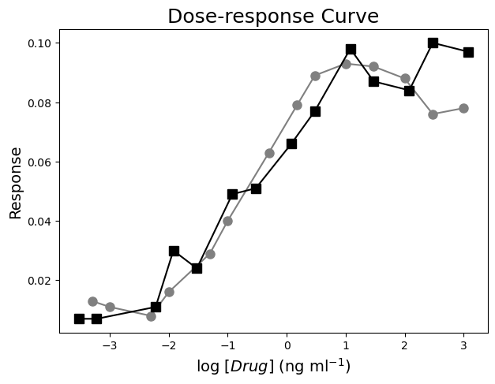
#Define the Hill function
def funcDRC(x, Rmin, Rmax, EC50, nHill): #create the function
"""
Return the Hill equation using Rmin, Rmax, EC50, and nHill
Args:
Rmin, the response effect in the absence of drug
Rmax, the maximum effect
EC50, the relative 50% effective dose or concentration
nHill, the Hill exponent which describes the steepness of the curve
Returns:
the Hill equation function "a * x + b"
"""
return Rmin + (Rmax-Rmin) / (1 + (((10**(np.log10(EC50)))/(10**x))**nHill))
#Combine all data
xDRC= pd.concat([dfDRC['log[Drug 1]'], dfDRC['log[Drug 2]']])
yDRC= pd.concat([dfDRC['Response 1'], dfDRC['Response 2']])
#Fit all data
paramsDRC, params_covarianceDRC = curve_fit(funcDRC, #the function we try to fit to the data
xDRC, #the x values, the log10 concentrations
yDRC, #the y values, the responses
[0.01, 0.12, 0.2, 1]) #the starting parameters, guesses from graph
#Report the fit parameters with standard errors
print("Rmin, the effect in the absence of drug = ", paramsDRC[0], "±", np.sqrt(np.diag(params_covarianceDRC))[0])
print("Rmax, the maximum effect = ", paramsDRC[1], "±", np.sqrt(np.diag(params_covarianceDRC))[1])
print("EC50 in (ng/ml), the relative 50% effective concentration = ", paramsDRC[2], "±", np.sqrt(np.diag(params_covarianceDRC))[2])
print("nHill, the Hill exponent = ", paramsDRC[3], "±", np.sqrt(np.diag(params_covarianceDRC))[3])
Rmin, the effect in the absence of drug = 0.008498737616173405 ± 0.003651549867015662
Rmax, the maximum effect = 0.09020671030749035 ± 0.002591463050546109
EC50 in (ng/ml), the relative 50% effective concentration = 0.18338955867846177 ± 0.048639840934997174
nHill, the Hill exponent = 0.7526341501947715 ± 0.13216413421539713
#Calculate the residuals
residDRC = yDRC - funcDRC(xDRC, *paramsDRC) #calculate the residuals, the star in *paramsDRC unpacks the array so the two optimized parameter values become the second to fifth arguments (after the x-values) to the function
#Generate X-values to calculate the function
xvalues = np.linspace(-10,10,1000) #create an array with 1000 evenly distributed elements between 0 (included) and -10 (included)
#Produce a combined graph
fig = plt.figure() #to create a figure object
xlimits = [-4, 4] #to make sure we use the same of the X-axis boundaries for both plots
ax1 = fig.add_axes([0.1, 0.51, 1, 0.8]) #to specify the coordinates, width and height of the top plot
ax2 = fig.add_axes([0.1, 0.1, 1, 0.4]) #to specify the coordinates, width and height of the bottom plot
ax1.plot(xDRC, yDRC, #plot a set of x (= the log concentrations) ,y (=the responses) data
marker='o', color='gray', markersize=8, linestyle='None', #use a round, gray marker with size 8 but no line
label='Data') #add a legend label
ax1.plot(xvalues, funcDRC(xvalues, *paramsDRC), #add the fitted curve to plot. Use the generated log10 concentrations as x-values. Use the fit parameters to calculate the y-values. The star in *paramsDRC unpacks the array so the two optimized parameter values become the second to fifth arguments (after the x-values) to the function.
color="red", #use a red line
label='Fit') #add a legend label
ax1.axis(xlimits + [0, 0.12]) #sets the X-axis and Y-axis boundaries for the top plot
ax1.tick_params(axis='x', bottom=False, labelbottom=False) #removes the ticks and tick labels on the X-axis for the top plot
ax1.set_ylabel('Response', fontsize=14) #adds Y-axis title for the top plot
ax1.legend(loc='upper left') #include legend
ax2.plot(xDRC, residDRC, #plot a set of x (=the concentrations),y (= the residuals) data points
marker='o', color='gray', linestyle='None', markersize=8) #use a round, gray marker with size 8 but no line
ax2.axhline(0, color='gray', linestyle="--") #adds a horizontal line at y=0
ax2.axis(xlimits + [-0.025,0.025]) #sets the X-axis and Y-axis boundaries for the bottom plot
ax2.set_xlabel('log $[Drug]$ (ng ml$^{-1}$)', fontsize=14) #adds X-axis title for the bottom plot, which is the same for the top plot
ax2.set_ylabel('Residuals', fontsize=14) #adds Y-axis title for the bottom plot
plt.show() #show the figure object
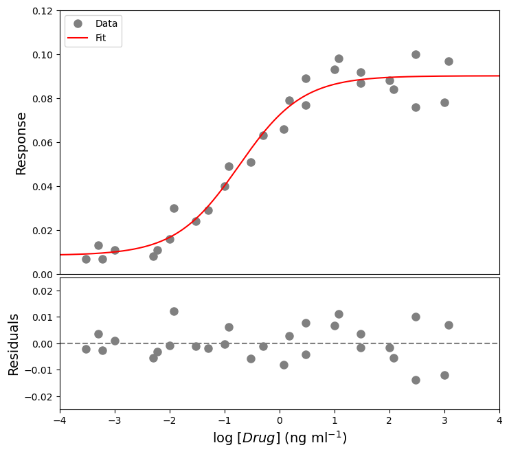
Colorimetric assay#
#Import the libraries
import numpy as np
import matplotlib.pyplot as plt
import pandas as pd
from scipy.optimize import curve_fit
#Read the Excel file
dfCA = pd.read_excel ('../data/ColorimetricAssay.xlsx', #create a pandas DataFrame from the filename with file path and extension shown
sheet_name=0, #use the first sheet (no need to specifically include this as we use the default setting)
skiprows=3, #skip the first three rows
skipfooter=3, #skip the last three rows
usecols=[6,7,8,9], #only import columns 6 to 9 - be aware that column numbers start with zero!
header=None, #our data does not have column names
names=['BSA-1','BSA-2', 'Sample-1', 'Sample-2']) #use BSA-1, BSA-2, Sample-1, and Sample-2 as column names
print (dfCA) #print the DataFrame created
BSA-1 BSA-2 Sample-1 Sample-2
0 1.405 1.240 0.6570 0.6090
1 1.125 0.974 0.4322 0.3690
2 0.844 0.686 0.2870 0.2580
3 0.705 0.560 0.1090 0.1050
4 0.539 0.436 0.0560 0.0648
5 0.311 0.278 0.0586 0.0562
6 0.209 0.188 0.0682 0.0567
7 0.100 0.095 0.0589 0.0563
#Insert a column containing the concentrations of the standards
x1 = [2000, 1500, 1000, 750, 500, 250, 125, 0] #create a list with integers containing the concentrations
dfCA.insert(0, '[BSA]', x1) #insert the column at index 0 (i.e. make it the first column) in dfCA, name the column [BSA], and fill it with the data provided by x1
print(dfCA) #print the DataFrame created
[BSA] BSA-1 BSA-2 Sample-1 Sample-2
0 2000 1.405 1.240 0.6570 0.6090
1 1500 1.125 0.974 0.4322 0.3690
2 1000 0.844 0.686 0.2870 0.2580
3 750 0.705 0.560 0.1090 0.1050
4 500 0.539 0.436 0.0560 0.0648
5 250 0.311 0.278 0.0586 0.0562
6 125 0.209 0.188 0.0682 0.0567
7 0 0.100 0.095 0.0589 0.0563
#Plot the data
plt.figure(figsize=(7,5)) #start a figure object
plt.plot(dfCA['[BSA]'], dfCA['BSA-1'], #plot a set of x (= the concentrations),y (= the measured absorbances) data points
marker='o', color='gray', markersize=8) #use a round, gray marker with size 8
plt.plot(dfCA['[BSA]'], dfCA['BSA-2'], #plot another set of x (= the concentrations),y (= the measured absorbances) data points
marker='o', color='black', markersize=8) #use a round, black marker with size 8
plt.title('Standard Curve', fontsize=18) #title of graph
plt.xlabel('$[BSA]$ ($\mu$g $ml^{-1}$)', fontsize=14) #X-axis label
plt.ylabel('Absorbance (AU)', fontsize=14) #Y-axis label
plt.axis([-10, 2200, 0, 1.5]) #axis boundaries, in this case from -10 to 2200 for the X-axis and 0 to 1.5 for the Y-axis
plt.show() #show the figure object
<>:11: SyntaxWarning: invalid escape sequence '\m'
<>:11: SyntaxWarning: invalid escape sequence '\m'
C:\Users\ucbtrv2\AppData\Local\Temp\ipykernel_14616\761490774.py:11: SyntaxWarning: invalid escape sequence '\m'
plt.xlabel('$[BSA]$ ($\mu$g $ml^{-1}$)', fontsize=14) #X-axis label
#Calculate mean and stdev
dfCA['BSA-mean'] = dfCA.iloc[:,1:3].mean(axis=1) #we use axis 1 to get the mean of the elements of one row, we use columns 1 = BSA-1 and 2 = BSA-2, represented by [1:3]. The result is added to a new column.
dfCA['BSA-std'] = dfCA.iloc[:,1:3].std(axis=1) #we use axis 1 to get the standard deviation of the elements of one row, we use columns 1 = BSA-1 and 2 = BSA-2, represented by [1:3]. The result is added to a new column.
print(dfCA) #print the DataFrame created
[BSA] BSA-1 BSA-2 Sample-1 Sample-2 BSA-mean BSA-std
0 2000 1.405 1.240 0.6570 0.6090 1.3225 0.116673
1 1500 1.125 0.974 0.4322 0.3690 1.0495 0.106773
2 1000 0.844 0.686 0.2870 0.2580 0.7650 0.111723
3 750 0.705 0.560 0.1090 0.1050 0.6325 0.102530
4 500 0.539 0.436 0.0560 0.0648 0.4875 0.072832
5 250 0.311 0.278 0.0586 0.0562 0.2945 0.023335
6 125 0.209 0.188 0.0682 0.0567 0.1985 0.014849
7 0 0.100 0.095 0.0589 0.0563 0.0975 0.003536
#Define a line
def funcline(x, a, b): #create the function
"""
Return a line using slope and intercept
Args:
the slope, a
the intercept, b
Returns:
the line function "a * x + b"
"""
return a * x + b
#Define a quadratic curve
def funcpoly2(x, a, b, c): #create the function
"""
Return a quadratic curve using the first and second coefficients, a and b, and constant, c
Args:
the first coefficient, a
the second coefficient, b
the constant, c
Returns:
the quadratic curve function "a * x^2 + b * x + c"
"""
return a * x**2 + b * x + c
#Fit with a line
params1, params_covariance1 = curve_fit(funcline, #the line function we try to fit to the data
dfCA['[BSA]'], #the x values, the concentrations
dfCA['BSA-mean'], #the y values, the measured absorbances
[0.1, 0.1], #the starting parameters for a (=the slope) and b (=the intercept)
sigma=dfCA['BSA-std'], #the standard deviations used for weighted fitting
absolute_sigma=True) #use sigma (=the standard deviations) in an absolute sense
#Fit with a quadratic curve
params2, params_covariance2 = curve_fit(funcpoly2, #the quadratic curve function we try to fit to the data
dfCA['[BSA]'], #the x values, the concentrations
dfCA['BSA-mean'], #the y values, the measured absorbances
[0.1, 0.1, 0.1], #the starting parameters for a (=the first coefficient), b (=the second coefficient), and c (=the constant)
sigma=dfCA['BSA-std'], #the standard deviations used for weighted fitting
absolute_sigma=True) #use sigma (=the standard deviations) in an absolute sense
#Report the fit parameters with standard errors for the line function
print("Slope, a = ", params1[0], "±", np.sqrt(np.diag(params_covariance1))[0])
print("Intercept, b = ", params1[1], "±", np.sqrt(np.diag(params_covariance1))[1])
#Report the fit parameters with standard errors for the quadratic function
print("First coefficient, a =", params2[0], "±", np.sqrt(np.diag(params_covariance2))[0])
print("Second coefficient, b = ", params2[1], "±", np.sqrt(np.diag(params_covariance2))[1])
print("Constant, c = ", params2[2], "±", np.sqrt(np.diag(params_covariance2))[2])
Slope, a = 0.0006752911504972768 ± 3.4711561818850496e-05
Intercept, b = 0.09893123662572621 ± 0.0034483918891948778
First coefficient, a = -1.0251269659569087e-07 ± 4.918443551362741e-08
Second coefficient, b = 0.000804959044796896 ± 7.124165832527459e-05
Constant, c = 0.097629671857749 ± 0.003504479565086863
#Calculate the residuals for the line function
resid1 = dfCA['BSA-mean'] - funcline(dfCA['[BSA]'], *params1) #calculate the residuals, the star in _*params1_ unpacks the array so the two optimized parameter values become the second and third arguments (after the x-values) to the function
#Calculate the residuals for the quadratic function
resid2 = dfCA['BSA-mean'] - funcpoly2(dfCA['[BSA]'], *params2) #calculate the residuals, the star in _*params2_ unpacks the array so the two optimized parameter values become the second, third, and fourth arguments (after the x-values) to the function
#Generate X-values to calculate the function
xvalues = np.linspace(0, 2200, 100) #create an array with 100 evenly distributed elements between 0 (included) and 2200 (included)
#Produce a combined graph
fig = plt.figure() #to create a figure object
xlimits = [0, 2200] #to make sure we use the same of the X-axis boundaries for both plots
ax1 = fig.add_axes([0.1, 0.53, 1, 0.81]) #to specify the coordinates, width and height of the top plot
ax2 = fig.add_axes([0.1, 0.1, 1, 0.4]) #to specify the coordinates, width and height of the bottom plot
ax1.errorbar(dfCA['[BSA]'], dfCA['BSA-mean'], #plot a set of x (= the concentrations),y (= the mean absorbances) data points
yerr=dfCA['BSA-std'], #use an error bar (= the standard deviations)
fmt='o', color='black', ecolor='black', #use a round, black marker with size 8
label='Data') #add a legend label
ax1.plot(xvalues, funcline(xvalues, *params1), #add the fitted line to plot. Use the generated BSA concentrations as x-values. Use the fitted parameters to calculate the y-values. The star in _*params1_ unpacks the array so the two optimized parameter values become the second and third arguments (after the x-values) to the function.
color="gray", linestyle='-', #use a gray line
label='Fit $y=ax+b$') #add a legend label
ax1.plot(xvalues, funcpoly2(xvalues, *params2), #add the fitted quadratic curve to plot. Use the generated BSA concentrations as x-values. Use the fitted parameters to calculate the y-values. The star in _*params2_ unpacks the array so the two optimized parameter values become the second, third, and fourth arguments (after the x-values) to the function.
color="red", linestyle='-', #use a red line
label='Fit $y=ax^2+bx$+c') #add a legend label
ax1.axis(xlimits + [0, 1.5]) #sets the X-axis and Y-axis boundaries for the top plot
ax1.tick_params(axis='x', bottom=False, labelbottom=False) #removes the ticks and tick labels on the X-axis for the top plot
ax1.set_ylabel('Absorbance (AU)') #adds Y-axis title for the top plot
ax1.legend(loc='upper left') #include legend
ax2.plot(dfCA['[BSA]'], resid1, #plot a set of x (= the concentrations),y (= the residuals for y=ax) data points
marker='o', color='gray', linestyle='-', markersize=8, #use gray datapoints size 8 and a line
label='Residuals $y=ax+b$') #add a legend label
ax2.plot(dfCA['[BSA]'], resid2, #plot a set of x (= the concentrations),y (= the residuals for y=ax^2+bx+c) data points
marker='o', color='red', linestyle='-', markersize=8, #use red datapoints size 8 and a line
label='Residuals $y=ax^2+bx$+c') #add a legend label
ax2.axhline(0, color='gray', linestyle="--") #adds a horizontal line at y=0
ax2.axis(xlimits + [-0.2,0.2]) #sets the X-axis and Y-axis boundaries for the bottom plot
ax2.set_xlabel('$[BSA]$ ($\mu$g $ml^{-1}$)') #adds X-axis title for the bottom plot, which is the same for the top plot
ax2.set_ylabel('Absorbance (AU)') #adds Y-axis title for the bottom plot
ax2.legend(loc='lower left') #include legend
plt.show() #show the figure object
<>:41: SyntaxWarning: invalid escape sequence '\m'
<>:41: SyntaxWarning: invalid escape sequence '\m'
C:\Users\ucbtrv2\AppData\Local\Temp\ipykernel_14616\3878947254.py:41: SyntaxWarning: invalid escape sequence '\m'
ax2.set_xlabel('$[BSA]$ ($\mu$g $ml^{-1}$)') #adds X-axis title for the bottom plot, which is the same for the top plot
#Calculate the concentration for each of the dilution factors
def solcalc(y, a, b, c): #create the function
"""
Solve the quadratic equation for x when y is given using the quadratic formula
Args:
the first coefficient, a
the second coefficient, b
the constant, c
Returns:
the solution x-values of a quadratic equation with y given
"""
return (-b + np.sqrt(b**2 - 4 * a * (c-y)))/(2 * a)
dfCA['Solution-1'] = dfCA['Sample-1'].apply(solcalc, args=params2.tolist()) #apply the function that calculates the solution x-values of a quadratic equation with y given to the Sample-1 absorbances. Use the fitted parameters (converted from NumPy array to list) as arguments for the function (after the y-values).
dfCA['Solution-2'] = dfCA['Sample-2'].apply(solcalc, args=params2.tolist()) #apply the function that calculates the solution x-values of a quadratic equation with y given to the Sample-2 absorbances. Use the fitted parameters (converted from NumPy array to list) as arguments for the function (after the y-values).
#Take the dilution factors into account
dfCA['DF'] = [2.5, 5, 10, 20, 0, 0, 0, 0] #add a column containing the dilution factors
dfCA['Concentration-1'] = dfCA['Solution-1'] * dfCA['DF'] #add a column with the calculated values for undiluted samples for 1
dfCA['Concentration-2'] = dfCA['Solution-2'] * dfCA['DF'] #add a column with the calculated values for undiluted samples for 2
print(dfCA) #print the DataFrame
[BSA] BSA-1 BSA-2 Sample-1 Sample-2 BSA-mean BSA-std Solution-1 \
0 2000 1.405 1.240 0.6570 0.6090 1.3225 0.116673 770.512554
1 1500 1.125 0.974 0.4322 0.3690 1.0495 0.106773 440.328532
2 1000 0.844 0.686 0.2870 0.2580 0.7650 0.111723 242.759724
3 750 0.705 0.560 0.1090 0.1050 0.6325 0.102530 14.150852
4 500 0.539 0.436 0.0560 0.0648 0.4875 0.072832 -51.380310
5 250 0.311 0.278 0.0586 0.0562 0.2945 0.023335 -48.190776
6 125 0.209 0.188 0.0682 0.0567 0.1985 0.014849 -36.391799
7 0 0.100 0.095 0.0589 0.0563 0.0975 0.003536 -47.822589
Solution-2 DF Concentration-1 Concentration-2
0 697.174408 2.5 1926.281385 1742.936019
1 352.991523 5.0 2201.642660 1764.957615
2 204.556761 10.0 2427.597239 2045.567610
3 9.166854 20.0 283.017031 183.337089
4 -40.574617 0.0 -0.000000 -0.000000
5 -51.135052 0.0 -0.000000 -0.000000
6 -50.521841 0.0 -0.000000 -0.000000
7 -51.012417 0.0 -0.000000 -0.000000
#Calculate the overal concentration
dfCAnew=dfCA.iloc[0:3,-2:] #create a new DataFrame containing all values you want to calculate the mean and standard deviation for
print(dfCAnew) #print the new DataFrame
print(np.array(dfCAnew).mean()) #convert the new DataFrame into a NumPy array and calulcate the mean of all elements
print(np.array(dfCAnew).std()) #convert the new DataFrame into a NumPy array and calulcate the standard deviation of all elements
Concentration-1 Concentration-2
0 1926.281385 1742.936019
1 2201.642660 1764.957615
2 2427.597239 2045.567610
2018.1637547413357
241.6461886993642
Redox potential#
#Import the libraries
import numpy as np
import matplotlib.pyplot as plt
import pandas as pd
from scipy.optimize import curve_fit
#Read the Excel file
dfRP = pd.read_excel ('../data/RedoxPotential.xlsx', #create a pandas DataFrame from the filename with file path and extension shown
sheet_name=0, #use the first sheet (no need to specifically include this as we use the default setting)
header=0) #our data has column names
print(dfRP) #print the DataFrame created
A550nm (AU) [Ferricyanide] (mM) [Ferrocyanide] (mM) \
0 0.264 10.000000 0.000000
1 0.738 0.000000 0.000000
2 0.433 0.024938 9.975062
3 0.374 0.049751 9.950249
4 0.342 0.074442 9.925558
5 0.326 0.099010 9.900990
6 0.315 0.123457 9.876543
7 0.307 0.147783 9.852217
8 0.302 0.196078 9.803922
9 0.296 0.243902 9.756098
10 0.289 0.291262 9.708738
[Sodium dithionite] (mM)
0 0
1 10
2 0
3 0
4 0
5 0
6 0
7 0
8 0
9 0
10 0
#Calculate log10([Ferrocyanide]/[Ferricyanide])
dfRP['Log10([FerroCN]/[FerriCN])'] = np.log10((dfRP.iloc[2:,2] / dfRP.iloc[2:,1])) #Calculate log10([Ferrocyanide]/[Ferricyanide]), but not for the first two rows as specified using iloc[start_index_row:(to end row), index_column] = [2:,2] and [2:,1] with column 1 (we start counting from 0!) = [Ferricyanide] and column 2 = [Ferrocyanide]. Store the information in a new column called 'Log10([FerroCN]/[FerriCN])'.
print(dfRP) #print the DataFrame created
A550nm (AU) [Ferricyanide] (mM) [Ferrocyanide] (mM) \
0 0.264 10.000000 0.000000
1 0.738 0.000000 0.000000
2 0.433 0.024938 9.975062
3 0.374 0.049751 9.950249
4 0.342 0.074442 9.925558
5 0.326 0.099010 9.900990
6 0.315 0.123457 9.876543
7 0.307 0.147783 9.852217
8 0.302 0.196078 9.803922
9 0.296 0.243902 9.756098
10 0.289 0.291262 9.708738
[Sodium dithionite] (mM) Log10([FerroCN]/[FerriCN])
0 0 NaN
1 10 NaN
2 0 2.602060
3 0 2.301030
4 0 2.124939
5 0 2.000000
6 0 1.903090
7 0 1.823909
8 0 1.698970
9 0 1.602060
10 0 1.522879
#Calculate log10([FerrocytC]/[FerricytC]) using a function
def funclog10_FerrocytC_FerricytC(Aobs, Aferri, Aferro): #create the function
"""
Calculate log10([FerrocytC]/[FerricytC]) = log10((Aobs - Aferri)/(Aferro - Aobs))
Args:
Aobs in AU = the observed signal for a mixture of ferro- and ferricyt c. The column containing the absorbances at 550 nm (in AU) in the presence of 25 to 300 μM ferricyanide and 9.975 to 9.700 mM ferrocyanide.
Aferri in AU = the observed signal for fully oxidized cyt c, i.e. ferricyt c. The absorbance at 550 nm (in AU) in the presence of 10 mM potassium ferricyanide.
Aferro in AU = the observed signal for fully reduced cyt c, i.e. ferrocyt c. The absorbance at 550 nm (in AU) in the presence of 10 mM sodium dithionite.
Returns:
log10([FerrocytC]/[FerricytC])
"""
log10FerrocytCFerricytC = np.log10((Aobs-Aferri) / (Aferro-Aobs))
return log10FerrocytCFerricytC
dfRP['Log10([FerrocytC]/[FerricytC])'] = dfRP.iloc[2:,0].apply(funclog10_FerrocytC_FerricytC, #Apply the function with arguments Aferri and Aferro (after Aobs) to our data set. Use iloc[start_index_row:(to end row), index_column] = [2:,0] to select Aobs for the data set but not for the first two rows. Store the information in a new column called 'Log10([FerrocytC]/[FerricytC])'.
args=(dfRP.iloc[0,0], dfRP.iloc[1,0])) #Use iloc[index_row,index_column] to select Aferri = [0,0] and Aferro = [1,0] for the data set.
print(dfRP) #print the DataFrame created
A550nm (AU) [Ferricyanide] (mM) [Ferrocyanide] (mM) \
0 0.264 10.000000 0.000000
1 0.738 0.000000 0.000000
2 0.433 0.024938 9.975062
3 0.374 0.049751 9.950249
4 0.342 0.074442 9.925558
5 0.326 0.099010 9.900990
6 0.315 0.123457 9.876543
7 0.307 0.147783 9.852217
8 0.302 0.196078 9.803922
9 0.296 0.243902 9.756098
10 0.289 0.291262 9.708738
[Sodium dithionite] (mM) Log10([FerroCN]/[FerriCN]) \
0 0 NaN
1 10 NaN
2 0 2.602060
3 0 2.301030
4 0 2.124939
5 0 2.000000
6 0 1.903090
7 0 1.823909
8 0 1.698970
9 0 1.602060
10 0 1.522879
Log10([FerrocytC]/[FerricytC])
0 NaN
1 NaN
2 -0.256413
3 -0.519709
4 -0.705601
5 -0.822506
6 -0.918770
7 -1.001009
8 -1.059703
9 -1.140272
10 -1.254306
#Plot the data
plt.figure(figsize=(7,5)) #start a figure object
plt.plot(dfRP.iloc[2:,4], dfRP.iloc[2:,5], #plot a set of x (= Log10([FerroCN]/[FerriCN]), i.e. column 4),y (= Log10([FerrocytC]/[FerricytC]), i.e. column 5) data points, but do not include the first two rows as specified using iloc[start_index_row:(to end row), index_column] = [2:,4] and [2:,5]
marker='o', color='gray', markersize=8, linestyle='None', #use a round, gray marker with size 8; use no line
label='Data') #add a legend label
plt.title('Cytochrome c', fontsize=18) #title of graph
plt.xlabel('$log10([Ferrocyanide]/[Ferricyanide]$)', fontsize=14) #X-axis label
plt.ylabel('$log10([FerrocytC]/[FerricytC])$', fontsize=14) #Y-axis label
plt.axis([1, 3, -1.5, 0]) #axis boundaries, in this case from 1 to 3 for the X-axis and -1.5 to 0 for the Y-axis
plt.legend(loc='lower right') #show legend in lower right corner
plt.show() #show the figure object
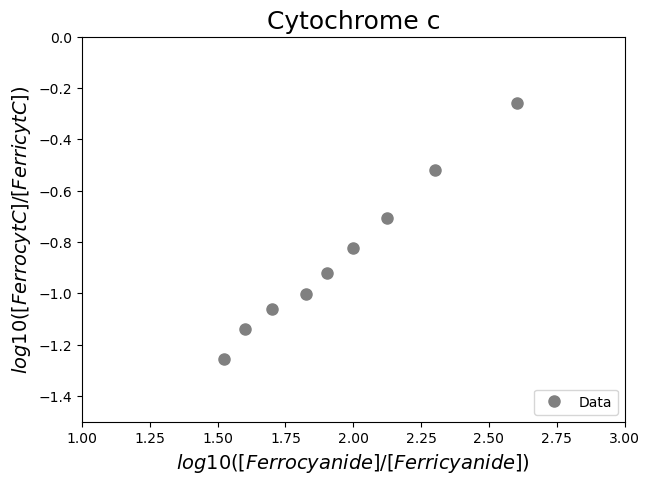
#Define a line
def funcline(x, a, b): #create the function
"""
Return a line using slope and intercept
Args:
the slope, a
the intercept, b
Returns:
the line function "a * x + b"
"""
return a * x + b
#Fit the data with a line
paramsCraig, params_covCraig = curve_fit(funcline, #the line function we try to fit to the data
dfRP.iloc[2:,4], #the x values, Log10([FerroCN]/[FerriCN]), but not the first two rows
dfRP.iloc[2:,5], #the y values, Log10([FerrocytC]/[FerricytC]), but not the first two rows
[1, -2]) #the starting parameters for a (=the slope) and b (=the intercept)
#Report the fit parameters with standard errors for the line function
print("Slope, a = ", paramsCraig[0], "±", np.sqrt(np.diag(params_covCraig))[0])
print("Intercept, b = ", paramsCraig[1], "±", np.sqrt(np.diag(params_covCraig))[1])
Slope, a = 0.9092069993196864 ± 0.02311791055989715
Intercept, b = -2.6290200322892794 ± 0.04578505242299154
#Calculate the residuals
resid = dfRP.iloc[2:,5] - funcline(dfRP.iloc[2:,4], *paramsCraig) #calculate the residuals, the star in _*paramsCraig_ unpacks the array so the two optimized parameter values become the second and third arguments (after the x-values) to the function
#Generate X-values to calculate the function
xvalues = np.linspace(1, 3, 100) #create an array with 100 evenly distributed elements between 0 (included) and 3 (included)
#Produce a combined graph
fig = plt.figure() #to create a figure object
xlimits = [1, 3] #to make sure we use the same of the X-axis boundaries for both plots
ax1 = fig.add_axes([0.1, 0.53, 1, 0.81]) #to specify the coordinates, width and height of the top plot
ax2 = fig.add_axes([0.1, 0.1, 1, 0.4]) #to specify the coordinates, width and height of the bottom plot
ax1.plot(dfRP.iloc[2:,4], dfRP.iloc[2:,5], #plot a set of x (= Log10([FerroCN]/[FerriCN]), i.e. column 4),y (= Log10([FerrocytC]/[FerricytC]), i.e. column 5) data points, but do not include the first two rows as specified using iloc[start_index_row:(to end row), index_column] = [2:,4] and [2:,5]
marker='o', color='gray', markersize=8, linestyle='None', #use a round, gray marker with size 8; use no line
label='Data') #add a legend label
ax1.plot(xvalues, funcline(xvalues, *paramsCraig), #add the fitted line to plot. Use the generated Log10([FerroCN]/[FerriCN] array as x-values. Use the fitted parameters to calculate the y-values. The star in _*paramsCraig_ unpacks the array so the two optimized parameter values become the second and third arguments (after the x-values) to the function.
color="gray", linestyle='-', #use a gray line
label='Fit') #add a legend label
ax1.axis(xlimits + [-1.5, 0]) #sets the X-axis and Y-axis boundaries for the top plot
ax1.tick_params(axis='x', bottom=False, labelbottom=False) #removes the ticks and tick labels on the X-axis for the top plot
ax1.set_ylabel('$log10([FerrocytC]/[FerricytC])$') #adds Y-axis title for the top plot
ax1.legend(loc='upper left') #include legend
ax2.plot(dfRP.iloc[2:,4], resid, #plot a set of x (= Log10([FerroCN]/[FerriCN]),y (= the residuals for y=ax+b) data points
marker='o', color='gray', linestyle='None', markersize=8) #use gray datapoints size 8 and no line
ax2.axhline(0, color='gray', linestyle="--") #adds a horizontal line at y=0
ax2.axis(xlimits + [-0.1,0.1]) #sets the X-axis and Y-axis boundaries for the bottom plot
ax2.set_xlabel('$log10([Ferrocyanide]/[Ferricyanide]$') #adds X-axis title for the bottom plot, which is the same for the top plot
ax2.set_ylabel('Residuals') #adds Y-axis title for the bottom plot
plt.show() #show the figure object
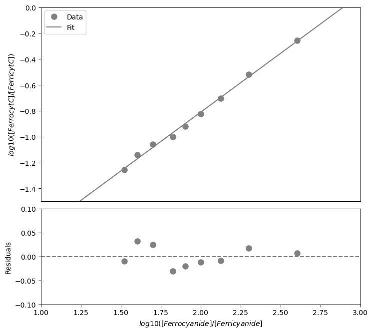
#Define the function
def funcmidredpot(a, b, da, db): #create the function
"""
Return the midpoint redox potential with uncertainty
Args:
the slope, a
the standard deviation of the slope, da
the intercept, b
the standard deviation of the intercept, db
Returns:
the midpoint redox potential
the uncertainty of the midpoint redox potential, using error propagation rules
"""
rp = 0.430 - 0.059 * (-b / a)
drp = 0.059 * np.sqrt((a**2 * db**2 + b**2 * da**2)/(a**4))
return rp, drp
#Apply the function
midredpot = funcmidredpot(*paramsCraig, *np.sqrt(np.diag(params_covCraig))) #Use the fitted parameters with standard deviations (the stars unpack both arrays) as arguments for the function.
print("The midpoint redox potential of cytochrome c is", midredpot[0], "+/-", midredpot[1], "V. The uncertainty is one standard deviation and is derived from the errors on the fit.") #Print the result of the experiment.
The midpoint redox potential of cytochrome c is 0.2593983856029154 +/- 0.005257729412117667 V. The uncertainty is one standard deviation and is derived from the errors on the fit.
Chemical unfolding#
#Import the libraries
import numpy as np
import matplotlib.pyplot as plt
import pandas as pd
from scipy.optimize import curve_fit
#Read the Excel file
dfCU = pd.read_excel ('../data/ChemicalUnfoldingAssay.xlsx', #create a pandas DataFrame from the filename with file path and extension shown
sheet_name=0, #use the first sheet (no need to specifically include this as we use the default setting)
header=0) #our data has column names
print(dfCU) #print the DataFrame created
[GdnHCl] (M) ε222nm (mdeg)
0 0.000 -14.746
1 0.198 -14.724
2 0.397 -14.746
3 0.595 -14.525
4 0.808 -14.657
5 0.965 -14.878
6 1.218 -14.635
7 1.422 -14.613
8 1.615 -14.657
9 1.855 -14.635
10 2.012 -14.525
11 2.234 -14.415
12 2.437 -14.063
13 2.709 -13.315
14 2.871 -12.677
15 3.023 -11.356
16 3.328 -8.363
17 3.498 -6.713
18 3.655 -5.568
19 3.932 -4.666
20 4.131 -4.292
21 4.232 -4.292
22 4.505 -3.873
23 4.698 -3.763
24 4.985 -3.565
25 5.100 -3.543
26 5.298 -3.433
27 5.478 -3.345
28 5.742 -3.191
29 5.919 -3.081
#Plot the data
plt.figure(figsize=(7,5)) #start a figure object
plt.plot(dfCU.iloc[:,0], dfCU.iloc[:,1], #plot a set of x (= [GdnHCl], i.e. column 1),y (= epsilon), i.e. column 2) data points
marker='o', color='gray', markersize=8, linestyle='None', #use a round, gray marker with size 8; use no line
label='Data') #add a legend label
plt.title('Chemical unfolding', fontsize=18) #title of graph
plt.xlabel('$[GdnHCl] (M)$', fontsize=14) #X-axis label
plt.ylabel('$\epsilon_{222nm} (mdeg)$', fontsize=14) #Y-axis label
plt.axis([-0.1, 6.5, -15.5, -2.5]) #axis boundaries, in this case from -0.1 to 6.5 for the X-axis and -15.5 to -2.5 for the Y-axis
plt.legend(loc='lower right') #show legend in lower right corner
plt.show() #show the figure object
<>:10: SyntaxWarning: invalid escape sequence '\e'
<>:10: SyntaxWarning: invalid escape sequence '\e'
C:\Users\ucbtrv2\AppData\Local\Temp\ipykernel_14616\2615624514.py:10: SyntaxWarning: invalid escape sequence '\e'
plt.ylabel('$\epsilon_{222nm} (mdeg)$', fontsize=14) #Y-axis label
#Define the temperature
temp = 20
#Define the chemical unfolding function
def chemicalunfolding(x, yn, mn, yu, mu, DGu, m):
return ((yn + mn * x) + (yu + mu * x) * np.exp(-((DGu + m * x) / (8.314 * (273.15 + temp))))) / (1 + np.exp(-((DGu + m * x) / (8.314 * (273.15 + temp)))))
#Create a list of GdnHCl concentrations as input for the function
GdnHClin=np.linspace(0, 10, 100)
#Test the initial guesses for the fitting parameters
plt.figure(figsize=(7,5)) #start a figure object
plt.plot(dfCU.iloc[:,0], dfCU.iloc[:,1], #plot a set of x (= [GdnHCl], i.e. column 1),y (= epsilon), i.e. column 2) data points
marker='o', color='gray', markersize=8, linestyle='None', #use a round, gray marker with size 8; use no line
label='Data') #add a legend label
plt.plot(GdnHClin, chemicalunfolding(GdnHClin, -15, 0, -4, 0.1, 20000, -5000), #Test my guesses for the initial parameters. Use the generated GdnHCl array between 0 and 10 as x-values.
color="red", linestyle='solid', #use red, solid line
label='Guesses') #add a legend label
plt.title('Chemical unfolding', fontsize=18) #title of graph
plt.xlabel('$[GdnHCl] (M)$', fontsize=14) #X-axis label
plt.ylabel('$\epsilon_{222nm} (mdeg)$', fontsize=14) #Y-axis label
plt.axis([-0.1, 6.5, -15.5, -2.5]) #axis boundaries, in this case from -0.1 to 6.5 for the X-axis and -15.5 to -2.5 for the Y-axis
plt.legend(loc='lower right') #show legend in lower right corner
plt.show() #show the figure object
<>:17: SyntaxWarning: invalid escape sequence '\e'
<>:17: SyntaxWarning: invalid escape sequence '\e'
C:\Users\ucbtrv2\AppData\Local\Temp\ipykernel_14616\3035427264.py:17: SyntaxWarning: invalid escape sequence '\e'
plt.ylabel('$\epsilon_{222nm} (mdeg)$', fontsize=14) #Y-axis label
#Fit the data with the chemical unfolding curve
paramsCU, params_covCU = curve_fit(chemicalunfolding, #the line function we try to fit to the data
dfCU.iloc[:,0], #the x values
dfCU.iloc[:,1], #the y values
[-15, 0, -4, 0.1, 20000, -5000]) #my guesses for the initial parameters
#Report the fit parameters with standard errors for the line function
print("Yn = ", paramsCU[0], "±", np.sqrt(np.diag(params_covCU))[0])
print("Yu = ", paramsCU[2], "±", np.sqrt(np.diag(params_covCU))[2])
print("mn = ", paramsCU[1], "±", np.sqrt(np.diag(params_covCU))[1])
print("mu = ", paramsCU[3], "±", np.sqrt(np.diag(params_covCU))[3])
print("DGu = ", paramsCU[4], "±", np.sqrt(np.diag(params_covCU))[4])
print("m = ", paramsCU[5], "±", np.sqrt(np.diag(params_covCU))[5])
Yn = -14.752468337068821 ± 0.045346805669152904
Yu = -6.30234970924443 ± 0.2502534953583287
mn = 0.08365002494085823 ± 0.03513344022643853
mu = 0.5425704214074223 ± 0.049048047815214345
DGu = 32338.784334711927 ± 823.0157211433537
m = -10079.733839632392 ± 257.13568891470453
#Calculate the residuals
resid = dfCU.iloc[:,1] - chemicalunfolding(dfCU.iloc[:,0], *paramsCU) #calculate the residuals, the star in _*paramsCU_ unpacks the array so the optimized parameter values become the arguments (after the x-values) to the function
#Produce a combined graph
fig = plt.figure() #to create a figure object
xlimits = [-0.1, 6.1] #to make sure we use the same of the X-axis boundaries for both plots
ax1 = fig.add_axes([0.1, 0.53, 1, 0.81]) #to specify the coordinates, width and height of the top plot
ax2 = fig.add_axes([0.1, 0.1, 1, 0.4]) #to specify the coordinates, width and height of the bottom plot
ax1.plot(dfCU.iloc[:,0], dfCU.iloc[:,1], #plot a set of x (= [GdnHCl], i.e. column 1),y (= epsilon), i.e. column 2) data points
marker='o', color='gray', markersize=8, linestyle='None', #use a round, gray marker with size 8; use no line
label='Data') #add a legend label
ax1.plot(GdnHClin, chemicalunfolding(GdnHClin, *paramsCU), #Add the fitted line to plot. Use the generated GdnHCl array between 0 and 10 as x-values. Use the fitted parameters to calculate the y-values. The star in _*paramsCU_ unpacks the array so the optimized parameter values become the arguments (after the x-values) to the function.
color="gray", linestyle='-', #use a gray, solid line
label='Fit') #add a legend label
ax1.axis(xlimits + [-15.5, -2.5]) #sets the X-axis and Y-axis boundaries for the top plot
ax1.tick_params(axis='x', bottom=False, labelbottom=False) #removes the ticks and tick labels on the X-axis for the top plot
ax1.set_ylabel('$\epsilon_{222nm} (mdeg)$') #adds Y-axis title for the top plot
ax1.legend(loc='upper left') #include legend
ax2.plot(dfCU.iloc[:,0], resid, #plot a set of x (= [GdnHCl]),y (= the residuals) data points
marker='o', color='gray', linestyle='None', markersize=8) #use gray datapoints size 8 and no line
ax2.axhline(0, color='gray', linestyle="--") #adds a horizontal line at y=0
ax2.axis(xlimits + [-0.3,0.3]) #sets the X-axis and Y-axis boundaries (needs some trial and error to find the right ones!) for the bottom plot
ax2.set_xlabel('$[GdnHCl] (M)$') #adds X-axis title for the bottom plot, which is the same for the top plot
ax2.set_ylabel('Residuals') #adds Y-axis title for the bottom plot
plt.show() #show the figure object
<>:23: SyntaxWarning: invalid escape sequence '\e'
<>:23: SyntaxWarning: invalid escape sequence '\e'
C:\Users\ucbtrv2\AppData\Local\Temp\ipykernel_14616\1257317264.py:23: SyntaxWarning: invalid escape sequence '\e'
ax1.set_ylabel('$\epsilon_{222nm} (mdeg)$') #adds Y-axis title for the top plot
Michaelis-Menten curve#
#Import the libraries
import numpy as np
import matplotlib.pyplot as plt
import pandas as pd
from scipy.optimize import curve_fit
#Read the Excel file
dfEK = pd.read_excel ('../data/EnzymeKineticsAssay.xlsx', #create a pandas DataFrame from the filename with file path and extension shown
sheet_name=0, #use the first sheet (no need to specifically include this as we use the default setting)
header=0) #our data has column names
print(dfEK) #print the DataFrame created
[S]0 (µM) v0 (mM s-1)
0 0.0 -0.024261
1 2.5 0.281586
2 5.0 0.503380
3 10.0 0.882312
4 20.0 1.528808
5 40.0 1.963921
6 80.0 2.322012
7 160.0 2.426638
8 320.0 2.783801
9 640.0 2.874228
10 1280.0 2.734735
#Plot the data
plt.figure(figsize=(7,5)) #start a figure object
plt.plot(dfEK.iloc[:,0], dfEK.iloc[:,1], #plot a set of x (= [S]0, i.e. column 1),y (= V0), i.e. column 2) data points
marker='o', color='gray', markersize=8, linestyle='None', #use a round, gray marker with size 8; use no line
label='Data') #add a legend label
plt.title('Michaelis-Menten curve', fontsize=18) #title of graph
plt.xlabel('$[S]_0$ in $\mu$$M$', fontsize=14) #X-axis label
plt.ylabel('$v_0$ in $mM s^{-1}$', fontsize=14) #Y-axis label
plt.axis([-0.1, 1300, -0.05, 3]) #axis boundaries, in this case from -0.1 to 1300 for the X-axis and -0.05 to 3 for the Y-axis
plt.legend(loc='lower right') #show legend in lower right corner
plt.show() #show the figure object
<>:9: SyntaxWarning: invalid escape sequence '\m'
<>:9: SyntaxWarning: invalid escape sequence '\m'
C:\Users\ucbtrv2\AppData\Local\Temp\ipykernel_14616\55317108.py:9: SyntaxWarning: invalid escape sequence '\m'
plt.xlabel('$[S]_0$ in $\mu$$M$', fontsize=14) #X-axis label
#Define the Michaelis-Menten function
def MichaelisMentenF(x, Km, Vmax) :
return (Vmax * x)/(Km + x)
#Create a list of substrate concentrations as input for the function
Sin=np.linspace(0, 1500, 1000)
#Test the initial guesses for the fitting parameters
plt.figure(figsize=(7,5)) #start a figure object
plt.plot(dfEK.iloc[:,0], dfEK.iloc[:,1], #plot a set of x (= [GdnHCl], i.e. column 1),y (= θ), i.e. column 2) data points
marker='o', color='gray', markersize=8, linestyle='None', #use a round, gray marker with size 8; use no line
label='Data') #add a legend label
plt.plot(Sin, MichaelisMentenF(Sin, 20, 2.8), #Test my guesses for the initial parameters. Use the generated [S]0 array between 0 and 1500 as x-values.
color="red", linestyle='solid', #use red, solid line
label='Guesses') #add a legend label
plt.title('Michaelis-Menten curve', fontsize=18) #title of graph
plt.xlabel('$[S]_0$ in $\mu$$M$', fontsize=14) #X-axis label
plt.ylabel('$v_0$ in $mM s^{-1}$', fontsize=14) #Y-axis label
plt.axis([-0.1, 1300, -0.05, 3]) #axis boundaries, in this case from -0.1 to 1300 for the X-axis and -0.05 to 3 for the Y-axis
plt.legend(loc='lower right') #show legend in lower right corner
plt.show() #show the figure object
<>:16: SyntaxWarning: invalid escape sequence '\m'
<>:16: SyntaxWarning: invalid escape sequence '\m'
C:\Users\ucbtrv2\AppData\Local\Temp\ipykernel_14616\342232315.py:16: SyntaxWarning: invalid escape sequence '\m'
plt.xlabel('$[S]_0$ in $\mu$$M$', fontsize=14) #X-axis label
#Fit the data with the chemical unfolding curve
paramsEK, params_covEK = curve_fit(MichaelisMentenF, #the line function we try to fit to the data
dfEK.iloc[:,0], #the x values
dfEK.iloc[:,1], #the y values
[20, 2.8]) #my guesses for the initial parameters
#Report the fit parameters with standard errors for the line function
print("Km = ", paramsEK[0], "±", np.sqrt(np.diag(params_covEK))[0])
print("Vmax = ", paramsEK[1], "±", np.sqrt(np.diag(params_covEK))[1])
Km = 20.116403196685493 ± 1.5716578691778114
Vmax = 2.877072644358705 ± 0.048488907316231296
#Calculate the residuals
resid = dfEK.iloc[:,1] - MichaelisMentenF(dfEK.iloc[:,0], *paramsEK) #calculate the residuals, the star in _*paramsEK_ unpacks the array so the optimized parameter values become the arguments (after the x-values) to the function
#Produce a combined graph
fig = plt.figure() #to create a figure object
xlimits = [-0.1, 1300] #to make sure we use the same of the X-axis boundaries for both plots
ax1 = fig.add_axes([0.1, 0.53, 1, 0.81]) #to specify the coordinates, width and height of the top plot
ax2 = fig.add_axes([0.1, 0.1, 1, 0.4]) #to specify the coordinates, width and height of the bottom plot
ax1.plot(dfEK.iloc[:,0], dfEK.iloc[:,1], #plot a set of x (= [S]0, i.e. column 1),y (= V0), i.e. column 2) data points
marker='o', color='gray', markersize=8, linestyle='None', #use a round, gray marker with size 8; use no line
label='Data') #add a legend label
ax1.plot(Sin, MichaelisMentenF(Sin, *paramsEK), #Add the fitted line to plot. Use the generated [S]0 array between 0 and 1500 as x-values. Use the fitted parameters to calculate the y-values. The star in _*paramsEK_ unpacks the array so the optimized parameter values become the arguments (after the x-values) to the function.
color="gray", linestyle='-', #use a gray, solid line
label='Fit') #add a legend label
ax1.axis(xlimits + [-0.05, 3]) #sets the X-axis and Y-axis boundaries for the top plot
ax1.tick_params(axis='x', bottom=False, labelbottom=False) #removes the ticks and tick labels on the X-axis for the top plot
ax1.set_ylabel('$v_0$ in $mM s^{-1}$') #adds Y-axis title for the top plot
ax1.legend(loc='lower right') #include legend
ax2.plot(dfEK.iloc[:,0], resid, #plot a set of x (= [S]0),y (= the residuals) data points
marker='o', color='gray', linestyle='None', markersize=8) #use gray datapoints size 8 and no line
ax2.axhline(0, color='gray', linestyle="--") #adds a horizontal line at y=0
ax2.axis(xlimits + [-0.3,0.3]) #sets the X-axis and Y-axis boundaries (needs some trial and error to find the right ones!) for the bottom plot
ax2.set_xlabel('$[S]_0$ in $\mu$$M$') #adds X-axis title for the bottom plot, which is the same for the top plot
ax2.set_ylabel('Residuals') #adds Y-axis title for the bottom plot
plt.show() #show the figure object
<>:31: SyntaxWarning: invalid escape sequence '\m'
<>:31: SyntaxWarning: invalid escape sequence '\m'
C:\Users\ucbtrv2\AppData\Local\Temp\ipykernel_14616\3313014866.py:31: SyntaxWarning: invalid escape sequence '\m'
ax2.set_xlabel('$[S]_0$ in $\mu$$M$') #adds X-axis title for the bottom plot, which is the same for the top plot
Thermal shift assay#
#Import the libraries
import numpy as np
import matplotlib.pyplot as plt
import matplotlib.gridspec as gridspec
import pandas as pd
from scipy.optimize import curve_fit
from scipy.ndimage import uniform_filter1d # to smoothen data, see the tip below
from scipy.signal import savgol_filter # to smoothen data, see the tip below
#Read the Excel file
df = pd.read_csv('../data/ThermalShiftAssay.txt', skiprows=1, sep='\t', usecols=[0, 1, 6, 7])
# We use pd.read_csv to read in the file and store the information in a new dataframe, i.e. df.
# We use skiprows=1 to skip the first row.
# We use sep='\t' to specify that we have a tab-delimited text format.
# We use usecols=[0, 1, 6, 7] to only read in columns 1, 2, 7, and 8.
print(df)
SamplePos SampleName Temp 465-580
0 A1 T4L wt 8uM 20.01 6.94
1 A1 T4L wt 8uM 20.01 6.99
2 A1 T4L wt 8uM 20.16 6.97
3 A1 T4L wt 8uM 20.32 7.00
4 A1 T4L wt 8uM 20.40 6.96
... ... ... ... ...
61915 H12 Empty 84.47 4.32
61916 H12 Empty 84.59 4.35
61917 H12 Empty 84.67 4.34
61918 H12 Empty 84.76 4.35
61919 H12 Empty 84.88 4.33
[61920 rows x 4 columns]
For well A1#
#Select data for A1
dfa1 = df[df['SamplePos']=='A1']
# We select all rows that contain A1 as sample position and store them in a new dataframe, i.e. dfa1.
print(dfa1)
SamplePos SampleName Temp 465-580
0 A1 T4L wt 8uM 20.01 6.94
1 A1 T4L wt 8uM 20.01 6.99
2 A1 T4L wt 8uM 20.16 6.97
3 A1 T4L wt 8uM 20.32 7.00
4 A1 T4L wt 8uM 20.40 6.96
.. ... ... ... ...
640 A1 T4L wt 8uM 84.47 78.21
641 A1 T4L wt 8uM 84.59 77.87
642 A1 T4L wt 8uM 84.67 77.57
643 A1 T4L wt 8uM 84.76 77.29
644 A1 T4L wt 8uM 84.88 76.92
[645 rows x 4 columns]
#Plot “fluorescence versus temperature data from well A1
xdfa1=dfa1['Temp'] + 273.15
# We select the temperature = x and convert it from °C to °K, the result is stored in a new dataframe, i.e. xdfa1.
ydfa1=dfa1['465-580']
# We select the fluorescence signal = y, the result is stored in a new dataframe, i.e. ydfa1.
# We now plot the graph "fluorescence signal" versus "temperature".
plt.figure(figsize=(7,5))
plt.plot(xdfa1, ydfa1, 'o', color='gray', markersize=8)
plt.title('Thermal Shift Assay', fontsize=18)
plt.xlabel('T (°K)', fontsize=14)
plt.ylabel('Fluorescence (AU)', fontsize=14)
plt.show()
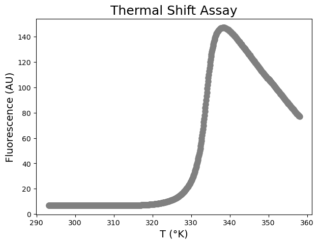
Analysis 1: First derivative method#
#Investigate the difference between a Pandas series and Numpy array
print(np.array(xdfa1))
print(xdfa1)
[293.16 293.16 293.31 293.47 293.55 293.69 293.84 293.92 294.08 294.08
294.23 294.31 294.38 294.52 294.6 294.68 294.83 294.91 295.05 295.12
295.19 295.34 295.41 295.49 295.56 295.7 295.84 295.91 295.98 296.05
296.2 296.27 296.34 296.49 296.56 296.68 296.75 296.83 296.96 297.03
297.18 297.24 297.31 297.44 297.51 297.58 297.71 297.78 297.92 298.05
298.11 298.18 298.38 298.44 298.51 298.64 298.71 298.83 298.9 299.02
299.16 299.22 299.35 299.48 299.55 299.6 299.79 299.92 299.98 300.1
300.17 300.3 300.41 300.48 300.54 300.66 300.78 300.91 301.03 301.09
301.2 301.32 301.45 301.51 301.63 301.68 301.8 301.92 302.03 302.1
302.15 302.33 302.45 302.51 302.55 302.68 302.85 302.91 303.03 303.08
303.2 303.36 303.47 303.59 303.59 303.7 303.81 303.92 304.02 304.14
304.25 304.36 304.42 304.53 304.64 304.74 304.85 304.96 305.07 305.12
305.28 305.39 305.45 305.54 305.65 305.76 305.87 305.92 306.02 306.13
306.22 306.34 306.44 306.54 306.64 306.75 306.85 306.94 307.05 307.15
307.25 307.36 307.46 307.56 307.62 307.71 307.85 307.96 308.06 308.16
308.26 308.36 308.49 308.55 308.65 308.74 308.85 308.99 309.04 309.14
309.23 309.32 309.47 309.56 309.66 309.76 309.85 309.98 310.08 310.17
310.27 310.37 310.5 310.6 310.64 310.78 310.87 310.97 311.1 311.2
311.29 311.37 311.47 311.6 311.69 311.79 311.88 311.96 312.06 312.14
312.27 312.41 312.5 312.59 312.68 312.81 312.89 312.98 313.11 313.2
313.29 313.37 313.47 313.59 313.67 313.81 313.89 313.98 314.11 314.2
314.28 314.4 314.53 314.61 314.7 314.79 314.91 315. 315.12 315.2
315.32 315.41 315.54 315.62 315.71 315.78 315.9 315.99 316.11 316.19
316.32 316.4 316.48 316.64 316.72 316.84 316.92 317. 317.12 317.24
317.32 317.44 317.51 317.64 317.76 317.83 317.92 318.03 318.14 318.23
318.34 318.42 318.47 318.62 318.72 318.81 318.92 319. 319.16 319.23
319.31 319.43 319.53 319.65 319.73 319.84 319.96 320.04 320.15 320.21
320.33 320.44 320.52 320.67 320.74 320.83 320.93 321.04 321.15 321.26
321.37 321.49 321.56 321.66 321.74 321.85 321.95 322.03 322.14 322.25
322.37 322.46 322.57 322.64 322.75 322.87 322.97 323.04 323.15 323.25
323.36 323.47 323.58 323.69 323.79 323.89 323.96 324.07 324.17 324.28
324.35 324.49 324.57 324.66 324.77 324.87 324.98 325.08 325.19 325.26
325.39 325.49 325.6 325.7 325.81 325.91 325.98 326.11 326.18 326.31
326.39 326.49 326.59 326.7 326.79 326.92 327.02 327.13 327.19 327.33
327.37 327.5 327.59 327.73 327.79 327.93 328.03 328.13 328.2 328.29
328.39 328.49 328.59 328.72 328.79 328.92 329.02 329.11 329.21 329.31
329.41 329.54 329.64 329.73 329.83 329.92 330.05 330.12 330.22 330.32
330.41 330.51 330.6 330.73 330.83 330.93 331.02 331.12 331.22 331.3
331.41 331.53 331.62 331.73 331.82 331.95 332.03 332.16 332.23 332.35
332.42 332.54 332.64 332.73 332.85 332.95 333.05 333.14 333.23 333.32
333.43 333.54 333.63 333.76 333.85 333.98 334.08 334.17 334.25 334.35
334.44 334.56 334.66 334.75 334.87 334.96 335.06 335.18 335.24 335.34
335.46 335.55 335.65 335.76 335.85 335.98 336.07 336.16 336.22 336.34
336.45 336.55 336.67 336.76 336.86 336.98 337.04 337.16 337.25 337.36
337.49 337.58 337.67 337.8 337.88 337.96 338.08 338.18 338.27 338.39
338.45 338.57 338.68 338.78 338.89 338.98 339.08 339.2 339.28 339.4
339.49 339.61 339.7 339.79 339.88 339.97 340.06 340.2 340.29 340.41
340.5 340.59 340.68 340.8 340.88 341. 341.12 341.21 341.3 341.42
341.51 341.59 341.7 341.8 341.92 342. 342.13 342.21 342.29 342.41
342.53 342.62 342.71 342.83 342.91 343.03 343.11 343.23 343.32 343.44
343.53 343.59 343.71 343.81 343.94 344.02 344.14 344.23 344.32 344.43
344.49 344.6 344.75 344.84 344.93 345.07 345.14 345.24 345.33 345.42
345.54 345.65 345.75 345.86 345.95 346.03 346.15 346.23 346.33 346.44
346.53 346.65 346.72 346.84 346.96 347.05 347.16 347.23 347.37 347.45
347.57 347.66 347.77 347.84 347.95 348.04 348.13 348.24 348.35 348.47
348.56 348.67 348.77 348.88 348.96 349.05 349.17 349.28 349.4 349.46
349.58 349.66 349.77 349.86 349.98 350.07 350.15 350.28 350.36 350.47
350.59 350.68 350.76 350.86 350.97 351.1 351.17 351.29 351.4 351.5
351.58 351.7 351.79 351.87 351.95 352.11 352.19 352.31 352.4 352.49
352.57 352.66 352.8 352.93 353.01 353.13 353.22 353.31 353.42 353.51
353.6 353.71 353.81 353.92 354.01 354.12 354.21 354.3 354.41 354.51
354.6 354.71 354.8 354.91 355.03 355.1 355.21 355.3 355.4 355.51
355.59 355.71 355.8 355.92 356.01 356.1 356.22 356.31 356.42 356.51
356.63 356.72 356.81 356.94 357.01 357.13 357.2 357.32 357.43 357.53
357.62 357.74 357.82 357.91 358.03]
0 293.16
1 293.16
2 293.31
3 293.47
4 293.55
...
640 357.62
641 357.74
642 357.82
643 357.91
644 358.03
Name: Temp, Length: 645, dtype: float64
#Calculate the approximate first derivative
outa1 = np.ones( (len(np.array(ydfa1)) -1) )
derya1 = np.divide(np.diff(np.array(ydfa1)), np.diff(np.array(xdfa1)), out=outa1, where=np.diff(np.array(xdfa1))!=0)
# The np.diff function calculates the n-th discrete difference. When n = 1 (default), np.diff calculates the difference between subsequent elements in our array, and returns an array that is one element shorter.
# The np.divide function returns a division of the inputs. To prevent division by zero, we can take advantage of the "where" option.
# We pre-initialize the output 'outa1' that we will use when the "divide by zero encountered" error happens. The input of 'out=' needs to be an array.
# To create the array 'outa1', we use the np.ones function which returns an array of given shape (i.e. n-1 data points, the 'len()' function gives us n) and type, filled with ones.
derxa1 = (np.array(xdfa1)[:-1] + np.array(xdfa1)[1:]) / 2
# The derivative is of size n-1, and is evaluated at the midpoints. The x data for the derivative can be calculated via (all but the last elements of x (represented by x[:-1]) + all but the first element of x (represented by x[1:])) / 2.
# We now plot the graph "fluorescence signal" versus "temperature" and add the calculated first derivative to it.
plt.figure(figsize=(7,5))
plt.plot(xdfa1, ydfa1, color='gray')
plt.plot(derxa1, derya1, color='red')
plt.title('Thermal Shift Assay', fontsize=18)
plt.xlabel('T (°K)', fontsize=14)
plt.ylabel('Fluorescence (AU)', fontsize=14)
plt.show()
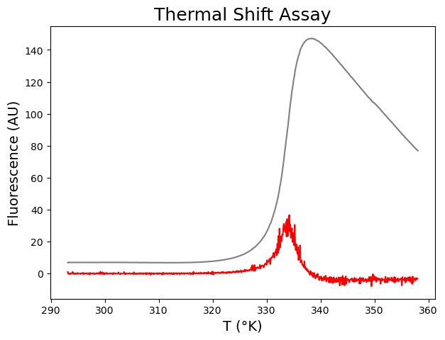
Tip: Make a plot with a secondary Y-axis#
#Create a plot with a secondary Y-axis
fig,ax = plt.subplots()
# create figure and axis objects with subplots()
ax.plot(xdfa1, ydfa1, color='gray')
# make a plot
ax.set_xlabel('T (°K)', fontsize=14)
ax.set_ylabel('Fluorescence (AU)',color="gray",fontsize=14)
# set x- and y-axis labels
ax2=ax.twinx()
# instantiate a second axes that shares the same x-axis
ax2.plot(derxa1, derya1, color='red')
# make a plot with different y-axis using second axis object
ax2.set_ylabel('First derivative',color="red",fontsize=14)
# set y-axis label for the second axis object
plt.show()
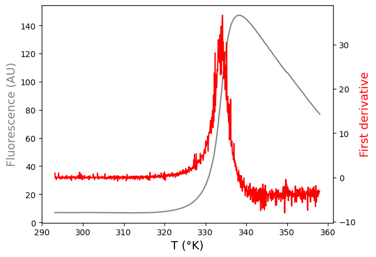
Tip: Smoothen a curve#
#See the difference between a moving average filter and a Savitzky-Golay filter
xtestsmooth = [0,1,2,3,4,5,6,7,8]
ytestsmooth = [2, 2, 5, 2, 1, 0, 1, 4, 9]
plt.figure(figsize=(7,5))
plt.plot(xtestsmooth, ytestsmooth, '-o', color='gray', markersize=8, label='Original')
plt.plot(xtestsmooth, uniform_filter1d(ytestsmooth, size=3), '-o', color='red', markersize=8, label='Moving average') # length of filter is 3
plt.plot(xtestsmooth, savgol_filter(ytestsmooth, 5, 3), '-o', color='blue', markersize=8, label='Savitzky-Golay') # window size is 5, polynomial order is 3
plt.title('Smoothing', fontsize=18)
plt.xlabel('Index', fontsize=14)
plt.ylabel('Value', fontsize=14)
plt.legend(loc='upper left')
plt.show()
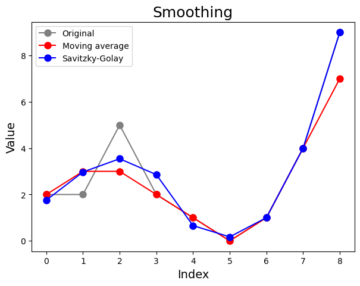
#Smoothen data with Savitzky-Golay filter
fig,ax = plt.subplots()
ax.plot(xdfa1, ydfa1, color='gray')
ax.set_xlabel('T (°K)', fontsize=14)
ax.set_ylabel('Fluorescence (AU)',color="gray",fontsize=14)
ax2=ax.twinx()
ax2.plot(derxa1, savgol_filter(derya1, 21, 3), color='red')
ax2.set_ylabel('First derivative',color="red",fontsize=14)
plt.show()
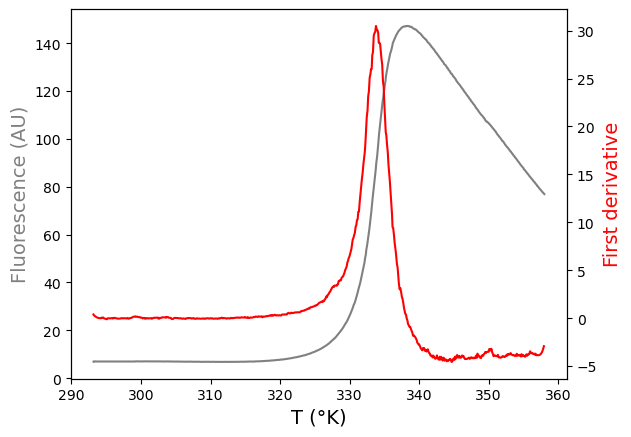
#Calculate the maximum of the first derivative and its corresponding x-value, i.e. the Tm
max_derya1 = np.max(derya1)
# find the maximum y value
max_derxa1 = derxa1[derya1.argmax()]
# find the x value corresponding to the maximum y value
print(max_derxa1, max_derya1)
334.21 36.62499999998117
Analysis 2: Curve fitting using a Boltzmann model#
#Define the Boltzmann function to fit the data
def funcBoltzmann(x, Ymin, Ymax, Tm, a):
return Ymin + ((Ymax) - Ymin)/(1 + np.exp((Tm-x)/a))
# We plot our curve with initial guesses for the parameters onto the data. Change these guesses if needed.
# Note that we first create a list of temperatures as input for our function using the numpy.linspace command.
xin = np.linspace(290, 360, 200)
plt.figure(figsize=(7,5))
plt.plot(xdfa1, ydfa1, 'o', color='gray', markersize=8)
plt.plot(xin, funcBoltzmann(xin, 10, 150, 333, 5), color="red",label='Guess')
plt.title('Thermal Shift Assay', fontsize=18)
plt.xlabel('T (°K)', fontsize=14)
plt.ylabel('Fluorescence (AU)', fontsize=14)
plt.show()
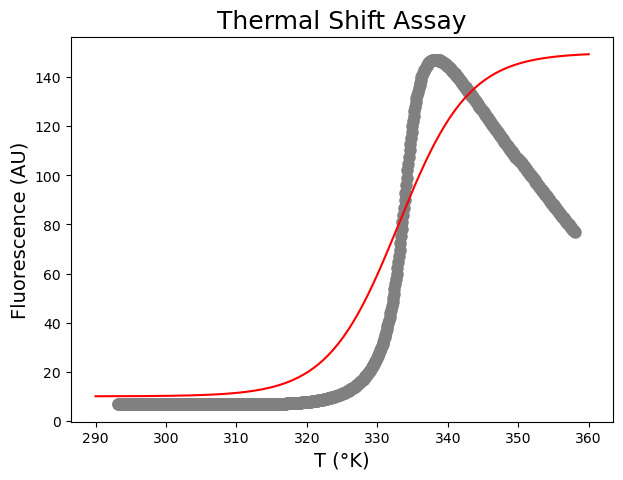
# We fit the data.
paramsBoltzmann, params_covarianceBoltzmann = curve_fit(funcBoltzmann, xdfa1, ydfa1,
[ 10, 150, 333, 5], maxfev=10000)
# We print the fitted parameters.
print(paramsBoltzmann)
print(np.sqrt(np.diag(params_covarianceBoltzmann)))
# We plot the fitted curve onto the data.
plt.figure(figsize=(7,5))
plt.plot(xdfa1, ydfa1, 'o', color='gray', markersize=8)
plt.plot(xin, funcBoltzmann(xin, *paramsBoltzmann), color="red",label='Fit')
plt.title('Thermal Shift Assay', fontsize=18)
plt.xlabel('T (°K)', fontsize=14)
plt.ylabel('Fluorescence (AU)', fontsize=14)
plt.show()
[ 8.46641251 117.38342176 332.50319245 0.96940869]
[0.72752489 0.92834356 0.10142863 0.08840673]
#Include an empirical term to model decrease after the peak
# We define the new function.
def funcBoltzmannEmpirical(x, Ymin, Ymax, Tm, a, b):
return Ymin + ((Ymax - b*(x - Tm) - Ymin)/(1 + np.exp((Tm-x)/a)))
# We fit the data.
paramsBoltzmannEmpirical, params_covarianceBoltzmannEmpirical = curve_fit(funcBoltzmannEmpirical, xdfa1, ydfa1,
[10, 150, 333, 5, 2], maxfev=10000)
# We print the fitted parameters.
print(paramsBoltzmannEmpirical)
print(np.sqrt(np.diag(params_covarianceBoltzmannEmpirical)))
# We plot the fitted curve onto the data.
plt.figure(figsize=(7,5))
plt.plot(xdfa1, ydfa1, 'o', color='gray', markersize=8)
plt.plot(xin, funcBoltzmannEmpirical(xin, *paramsBoltzmannEmpirical), color="blue",label='Fit')
plt.title('Thermal Shift Assay', fontsize=18)
plt.xlabel('T (°K)', fontsize=14)
plt.ylabel('Fluorescence (AU)', fontsize=14)
plt.show()
[ 7.85990258 171.68481688 333.74524363 1.52565204 3.97356596]
[0.09701873 0.33837075 0.01447148 0.0111816 0.0236133 ]
Analysis 3: Curve fitting using the equation describing the unfolding of a monomer via a two-state mechanism#
#Define the unfolding function to fit the data
def funcUF(x, yn, mn, yu, mu, DHm, Tm, DCp):
return ((yn + mn * x) + (yu + mu * x) * np.exp((DHm * ((x / Tm) - 1) + DCp * (Tm - x + x * np.log(x / Tm))) / (8.314 * x))) / (1 + np.exp((DHm * ((x / Tm) - 1) + DCp * (Tm - x + x * np.log(x / Tm))) / (8.314 * x)))
#Test input parameters
plt.figure(figsize=(7,5))
plt.plot(xdfa1, ydfa1, 'o', color='gray', markersize=8)
plt.plot(xin, funcUF(xin, 6, -0.01, 150, 0.02, 402000, 330, 6000), color="red",label='Fit')
plt.title('Thermal Shift Assay', fontsize=18)
plt.xlabel('T (°K)', fontsize=14)
plt.ylabel('Fluorescence (AU)', fontsize=14)
plt.show()
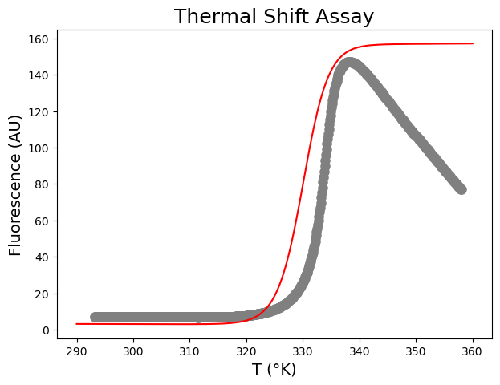
#Fit the data using the determined input parameters
paramsUF, params_covarianceUF = curve_fit(funcUF, xdfa1, ydfa1,
[6, -0.01, 150, 0.02, 402000, 330, 6000], maxfev=10000)
print(paramsUF)
print(np.sqrt(np.diag(params_covarianceUF)))
plt.figure(figsize=(7,5))
plt.plot(xdfa1, ydfa1, 'o', color='gray', markersize=8)
plt.plot(xin, funcUF(xin, *paramsUF), color="red",label='Fit')
plt.title('Thermal Shift Assay', fontsize=18)
plt.xlabel('T (°K)', fontsize=14)
plt.ylabel('Fluorescence (AU)', fontsize=14)
plt.show()
[-3.60741800e+01 1.40218168e-01 1.46004700e+03 -3.86614730e+00
6.48921008e+05 3.33813581e+02 2.63591358e+04]
[2.16781537e+00 6.94593293e-03 4.86727186e+00 1.39736487e-02
3.32159245e+03 9.06504468e-03 2.19021576e+02]
Advice: Overfitting#
#Define the unfolding function without the change in heat capacity to fit the data
def funcUFnoDCp(x, yn, mn, yu, mu, DHm, Tm):
return ((yn + mn * x) + (yu + mu * x) * np.exp((DHm / 8.314) * ((1 / Tm) - (1 / x)))) / (1 + np.exp((DHm / 8.314) * ((1 / Tm) - (1 / x))))
#Fit the data
paramsUFnoDCp, params_covarianceUFnoDCp = curve_fit(funcUFnoDCp, xdfa1, ydfa1,
[6, -0.01, 150, 0.02, 402000, 330], maxfev=10000)
print(paramsUFnoDCp)
print(np.sqrt(np.diag(params_covarianceUFnoDCp)))
plt.figure(figsize=(7,5))
plt.plot(xdfa1, ydfa1, 'o', color='gray', markersize=8)
plt.plot(xin, funcUF(xin, *paramsUF), color="red",label='Change in heat capacity')
plt.plot(xin, funcUFnoDCp(xin, *paramsUFnoDCp), color="blue",label='Change in heat capacity = 0')
plt.title('Unfolding', fontsize=18)
plt.xlabel('T (°K)', fontsize=14)
plt.ylabel('$\Delta$$A_{286nm}$ (AU) x 100', fontsize=14)
plt.legend(loc='upper left')
plt.show()
<>:14: SyntaxWarning: invalid escape sequence '\D'
<>:14: SyntaxWarning: invalid escape sequence '\D'
C:\Users\ucbtrv2\AppData\Local\Temp\ipykernel_14616\1401809076.py:14: SyntaxWarning: invalid escape sequence '\D'
plt.ylabel('$\Delta$$A_{286nm}$ (AU) x 100', fontsize=14)
[-3.87419869e+01 1.50303538e-01 1.48440857e+03 -3.93535895e+00
6.41886743e+05 3.33812832e+02]
[2.47012998e+00 7.94675118e-03 6.88836674e+00 1.97610448e-02
4.46184075e+03 1.24515726e-02]
For each well…#
#Group by SamplePos column and convert its result into a dictionary of DataFrames
dict_of_wells = dict(tuple(df.groupby("SamplePos")))
# We group by SamplePos column and convert its result into a dictionary of DataFrames.
print(dict_of_wells)
{'A1': SamplePos SampleName Temp 465-580
0 A1 T4L wt 8uM 20.01 6.94
1 A1 T4L wt 8uM 20.01 6.99
2 A1 T4L wt 8uM 20.16 6.97
3 A1 T4L wt 8uM 20.32 7.00
4 A1 T4L wt 8uM 20.40 6.96
.. ... ... ... ...
640 A1 T4L wt 8uM 84.47 78.21
641 A1 T4L wt 8uM 84.59 77.87
642 A1 T4L wt 8uM 84.67 77.57
643 A1 T4L wt 8uM 84.76 77.29
644 A1 T4L wt 8uM 84.88 76.92
[645 rows x 4 columns], 'A10': SamplePos SampleName Temp 465-580
5805 A10 Empty 20.01 5.22
5806 A10 Empty 20.01 5.23
5807 A10 Empty 20.16 5.20
5808 A10 Empty 20.32 5.19
5809 A10 Empty 20.40 5.20
... ... ... ... ...
6445 A10 Empty 84.47 3.11
6446 A10 Empty 84.59 3.13
6447 A10 Empty 84.67 3.12
6448 A10 Empty 84.76 3.09
6449 A10 Empty 84.88 3.11
[645 rows x 4 columns], 'A11': SamplePos SampleName Temp 465-580
6450 A11 Empty 20.01 6.95
6451 A11 Empty 20.01 6.93
6452 A11 Empty 20.16 6.91
6453 A11 Empty 20.32 6.91
6454 A11 Empty 20.40 6.88
... ... ... ... ...
7090 A11 Empty 84.47 4.02
7091 A11 Empty 84.59 4.02
7092 A11 Empty 84.67 4.03
7093 A11 Empty 84.76 4.04
7094 A11 Empty 84.88 4.01
[645 rows x 4 columns], 'A12': SamplePos SampleName Temp 465-580
7095 A12 Empty 20.01 7.11
7096 A12 Empty 20.01 7.06
7097 A12 Empty 20.16 7.08
7098 A12 Empty 20.32 7.09
7099 A12 Empty 20.40 7.05
... ... ... ... ...
7735 A12 Empty 84.47 4.14
7736 A12 Empty 84.59 4.11
7737 A12 Empty 84.67 4.10
7738 A12 Empty 84.76 4.11
7739 A12 Empty 84.88 4.11
[645 rows x 4 columns], 'A2': SamplePos SampleName Temp 465-580
645 A2 T4L wt 8uM 20.01 7.15
646 A2 T4L wt 8uM 20.01 7.12
647 A2 T4L wt 8uM 20.16 7.15
648 A2 T4L wt 8uM 20.32 7.12
649 A2 T4L wt 8uM 20.40 7.16
... ... ... ... ...
1285 A2 T4L wt 8uM 84.47 73.00
1286 A2 T4L wt 8uM 84.59 72.65
1287 A2 T4L wt 8uM 84.67 72.36
1288 A2 T4L wt 8uM 84.76 72.08
1289 A2 T4L wt 8uM 84.88 71.80
[645 rows x 4 columns], 'A3': SamplePos SampleName Temp 465-580
1290 A3 T4L wt 8uM 20.01 8.77
1291 A3 T4L wt 8uM 20.01 8.78
1292 A3 T4L wt 8uM 20.16 8.78
1293 A3 T4L wt 8uM 20.32 8.80
1294 A3 T4L wt 8uM 20.40 8.82
... ... ... ... ...
1930 A3 T4L wt 8uM 84.47 49.05
1931 A3 T4L wt 8uM 84.59 48.96
1932 A3 T4L wt 8uM 84.67 48.80
1933 A3 T4L wt 8uM 84.76 48.57
1934 A3 T4L wt 8uM 84.88 48.41
[645 rows x 4 columns], 'A4': SamplePos SampleName Temp 465-580
1935 A4 T4L wt 8uM 20.01 7.77
1936 A4 T4L wt 8uM 20.01 7.80
1937 A4 T4L wt 8uM 20.16 7.76
1938 A4 T4L wt 8uM 20.32 7.83
1939 A4 T4L wt 8uM 20.40 7.82
... ... ... ... ...
2575 A4 T4L wt 8uM 84.47 24.66
2576 A4 T4L wt 8uM 84.59 24.58
2577 A4 T4L wt 8uM 84.67 24.51
2578 A4 T4L wt 8uM 84.76 24.47
2579 A4 T4L wt 8uM 84.88 24.36
[645 rows x 4 columns], 'A5': SamplePos SampleName Temp 465-580
2580 A5 Empty 20.01 7.61
2581 A5 Empty 20.01 7.59
2582 A5 Empty 20.16 7.55
2583 A5 Empty 20.32 7.59
2584 A5 Empty 20.40 7.55
... ... ... ... ...
3220 A5 Empty 84.47 4.32
3221 A5 Empty 84.59 4.35
3222 A5 Empty 84.67 4.34
3223 A5 Empty 84.76 4.35
3224 A5 Empty 84.88 4.33
[645 rows x 4 columns], 'A6': SamplePos SampleName Temp 465-580
3225 A6 Empty 20.01 7.61
3226 A6 Empty 20.01 7.59
3227 A6 Empty 20.16 7.55
3228 A6 Empty 20.32 7.59
3229 A6 Empty 20.40 7.55
... ... ... ... ...
3865 A6 Empty 84.47 4.32
3866 A6 Empty 84.59 4.35
3867 A6 Empty 84.67 4.34
3868 A6 Empty 84.76 4.35
3869 A6 Empty 84.88 4.33
[645 rows x 4 columns], 'A7': SamplePos SampleName Temp 465-580
3870 A7 Empty 20.01 7.61
3871 A7 Empty 20.01 7.59
3872 A7 Empty 20.16 7.55
3873 A7 Empty 20.32 7.59
3874 A7 Empty 20.40 7.55
... ... ... ... ...
4510 A7 Empty 84.47 4.32
4511 A7 Empty 84.59 4.35
4512 A7 Empty 84.67 4.34
4513 A7 Empty 84.76 4.35
4514 A7 Empty 84.88 4.33
[645 rows x 4 columns], 'A8': SamplePos SampleName Temp 465-580
4515 A8 Empty 20.01 7.61
4516 A8 Empty 20.01 7.59
4517 A8 Empty 20.16 7.55
4518 A8 Empty 20.32 7.59
4519 A8 Empty 20.40 7.55
... ... ... ... ...
5155 A8 Empty 84.47 4.32
5156 A8 Empty 84.59 4.35
5157 A8 Empty 84.67 4.34
5158 A8 Empty 84.76 4.35
5159 A8 Empty 84.88 4.33
[645 rows x 4 columns], 'A9': SamplePos SampleName Temp 465-580
5160 A9 Empty 20.01 6.45
5161 A9 Empty 20.01 6.44
5162 A9 Empty 20.16 6.41
5163 A9 Empty 20.32 6.39
5164 A9 Empty 20.40 6.41
... ... ... ... ...
5800 A9 Empty 84.47 3.73
5801 A9 Empty 84.59 3.74
5802 A9 Empty 84.67 3.75
5803 A9 Empty 84.76 3.75
5804 A9 Empty 84.88 3.72
[645 rows x 4 columns], 'B1': SamplePos SampleName Temp 465-580
7740 B1 T4L wt 4 uM 20.01 5.48
7741 B1 T4L wt 4 uM 20.01 5.47
7742 B1 T4L wt 4 uM 20.16 5.46
7743 B1 T4L wt 4 uM 20.32 5.47
7744 B1 T4L wt 4 uM 20.40 5.48
... ... ... ... ...
8380 B1 T4L wt 4 uM 84.47 37.90
8381 B1 T4L wt 4 uM 84.59 37.86
8382 B1 T4L wt 4 uM 84.67 37.63
8383 B1 T4L wt 4 uM 84.76 37.48
8384 B1 T4L wt 4 uM 84.88 37.29
[645 rows x 4 columns], 'B10': SamplePos SampleName Temp 465-580
13545 B10 Empty 20.01 7.45
13546 B10 Empty 20.01 7.43
13547 B10 Empty 20.16 7.44
13548 B10 Empty 20.32 7.40
13549 B10 Empty 20.40 7.41
... ... ... ... ...
14185 B10 Empty 84.47 4.24
14186 B10 Empty 84.59 4.25
14187 B10 Empty 84.67 4.26
14188 B10 Empty 84.76 4.28
14189 B10 Empty 84.88 4.26
[645 rows x 4 columns], 'B11': SamplePos SampleName Temp 465-580
14190 B11 Empty 20.01 7.87
14191 B11 Empty 20.01 7.89
14192 B11 Empty 20.16 7.86
14193 B11 Empty 20.32 7.84
14194 B11 Empty 20.40 7.82
... ... ... ... ...
14830 B11 Empty 84.47 4.50
14831 B11 Empty 84.59 4.49
14832 B11 Empty 84.67 4.50
14833 B11 Empty 84.76 4.50
14834 B11 Empty 84.88 4.50
[645 rows x 4 columns], 'B12': SamplePos SampleName Temp 465-580
14835 B12 Empty 20.01 6.61
14836 B12 Empty 20.01 6.60
14837 B12 Empty 20.16 6.59
14838 B12 Empty 20.32 6.56
14839 B12 Empty 20.40 6.60
... ... ... ... ...
15475 B12 Empty 84.47 3.82
15476 B12 Empty 84.59 3.81
15477 B12 Empty 84.67 3.80
15478 B12 Empty 84.76 3.84
15479 B12 Empty 84.88 3.80
[645 rows x 4 columns], 'B2': SamplePos SampleName Temp 465-580
8385 B2 T4L wt 4 uM 20.01 7.09
8386 B2 T4L wt 4 uM 20.01 7.09
8387 B2 T4L wt 4 uM 20.16 7.07
8388 B2 T4L wt 4 uM 20.32 7.10
8389 B2 T4L wt 4 uM 20.40 7.09
... ... ... ... ...
9025 B2 T4L wt 4 uM 84.47 35.78
9026 B2 T4L wt 4 uM 84.59 35.55
9027 B2 T4L wt 4 uM 84.67 35.58
9028 B2 T4L wt 4 uM 84.76 35.45
9029 B2 T4L wt 4 uM 84.88 35.30
[645 rows x 4 columns], 'B3': SamplePos SampleName Temp 465-580
9030 B3 T4L wt 4 uM 20.01 7.55
9031 B3 T4L wt 4 uM 20.01 7.60
9032 B3 T4L wt 4 uM 20.16 7.61
9033 B3 T4L wt 4 uM 20.32 7.60
9034 B3 T4L wt 4 uM 20.40 7.60
... ... ... ... ...
9670 B3 T4L wt 4 uM 84.47 20.66
9671 B3 T4L wt 4 uM 84.59 20.57
9672 B3 T4L wt 4 uM 84.67 20.52
9673 B3 T4L wt 4 uM 84.76 20.52
9674 B3 T4L wt 4 uM 84.88 20.48
[645 rows x 4 columns], 'B4': SamplePos SampleName Temp 465-580
9675 B4 T4L wt 4 uM 20.01 7.04
9676 B4 T4L wt 4 uM 20.01 7.05
9677 B4 T4L wt 4 uM 20.16 7.07
9678 B4 T4L wt 4 uM 20.32 7.04
9679 B4 T4L wt 4 uM 20.40 7.08
... ... ... ... ...
10315 B4 T4L wt 4 uM 84.47 11.98
10316 B4 T4L wt 4 uM 84.59 11.97
10317 B4 T4L wt 4 uM 84.67 11.96
10318 B4 T4L wt 4 uM 84.76 11.91
10319 B4 T4L wt 4 uM 84.88 11.86
[645 rows x 4 columns], 'B5': SamplePos SampleName Temp 465-580
10320 B5 Empty 20.01 7.61
10321 B5 Empty 20.01 7.59
10322 B5 Empty 20.16 7.55
10323 B5 Empty 20.32 7.59
10324 B5 Empty 20.40 7.55
... ... ... ... ...
10960 B5 Empty 84.47 4.32
10961 B5 Empty 84.59 4.35
10962 B5 Empty 84.67 4.34
10963 B5 Empty 84.76 4.35
10964 B5 Empty 84.88 4.33
[645 rows x 4 columns], 'B6': SamplePos SampleName Temp 465-580
10965 B6 Empty 20.01 7.61
10966 B6 Empty 20.01 7.59
10967 B6 Empty 20.16 7.55
10968 B6 Empty 20.32 7.59
10969 B6 Empty 20.40 7.55
... ... ... ... ...
11605 B6 Empty 84.47 4.32
11606 B6 Empty 84.59 4.35
11607 B6 Empty 84.67 4.34
11608 B6 Empty 84.76 4.35
11609 B6 Empty 84.88 4.33
[645 rows x 4 columns], 'B7': SamplePos SampleName Temp 465-580
11610 B7 Empty 20.01 7.61
11611 B7 Empty 20.01 7.59
11612 B7 Empty 20.16 7.55
11613 B7 Empty 20.32 7.59
11614 B7 Empty 20.40 7.55
... ... ... ... ...
12250 B7 Empty 84.47 4.32
12251 B7 Empty 84.59 4.35
12252 B7 Empty 84.67 4.34
12253 B7 Empty 84.76 4.35
12254 B7 Empty 84.88 4.33
[645 rows x 4 columns], 'B8': SamplePos SampleName Temp 465-580
12255 B8 Empty 20.01 7.61
12256 B8 Empty 20.01 7.59
12257 B8 Empty 20.16 7.55
12258 B8 Empty 20.32 7.59
12259 B8 Empty 20.40 7.55
... ... ... ... ...
12895 B8 Empty 84.47 4.32
12896 B8 Empty 84.59 4.35
12897 B8 Empty 84.67 4.34
12898 B8 Empty 84.76 4.35
12899 B8 Empty 84.88 4.33
[645 rows x 4 columns], 'B9': SamplePos SampleName Temp 465-580
12900 B9 Empty 20.01 6.97
12901 B9 Empty 20.01 6.95
12902 B9 Empty 20.16 6.95
12903 B9 Empty 20.32 6.96
12904 B9 Empty 20.40 6.94
... ... ... ... ...
13540 B9 Empty 84.47 4.01
13541 B9 Empty 84.59 4.01
13542 B9 Empty 84.67 4.04
13543 B9 Empty 84.76 4.01
13544 B9 Empty 84.88 3.99
[645 rows x 4 columns], 'C1': SamplePos SampleName Temp 465-580
15480 C1 T4L wt 2 uM 20.01 4.71
15481 C1 T4L wt 2 uM 20.01 4.71
15482 C1 T4L wt 2 uM 20.16 4.70
15483 C1 T4L wt 2 uM 20.32 4.70
15484 C1 T4L wt 2 uM 20.40 4.72
... ... ... ... ...
16120 C1 T4L wt 2 uM 84.47 19.52
16121 C1 T4L wt 2 uM 84.59 19.46
16122 C1 T4L wt 2 uM 84.67 19.37
16123 C1 T4L wt 2 uM 84.76 19.31
16124 C1 T4L wt 2 uM 84.88 19.23
[645 rows x 4 columns], 'C10': SamplePos SampleName Temp 465-580
21285 C10 Empty 20.01 7.36
21286 C10 Empty 20.01 7.35
21287 C10 Empty 20.16 7.35
21288 C10 Empty 20.32 7.33
21289 C10 Empty 20.40 7.31
... ... ... ... ...
21925 C10 Empty 84.47 4.23
21926 C10 Empty 84.59 4.20
21927 C10 Empty 84.67 4.19
21928 C10 Empty 84.76 4.20
21929 C10 Empty 84.88 4.19
[645 rows x 4 columns], 'C11': SamplePos SampleName Temp 465-580
21930 C11 Empty 20.01 7.01
21931 C11 Empty 20.01 7.01
21932 C11 Empty 20.16 7.00
21933 C11 Empty 20.32 6.98
21934 C11 Empty 20.40 7.01
... ... ... ... ...
22570 C11 Empty 84.47 4.07
22571 C11 Empty 84.59 4.07
22572 C11 Empty 84.67 4.07
22573 C11 Empty 84.76 4.04
22574 C11 Empty 84.88 4.05
[645 rows x 4 columns], 'C12': SamplePos SampleName Temp 465-580
22575 C12 Empty 20.01 4.76
22576 C12 Empty 20.01 4.74
22577 C12 Empty 20.16 4.75
22578 C12 Empty 20.32 4.74
22579 C12 Empty 20.40 4.71
... ... ... ... ...
23215 C12 Empty 84.47 2.74
23216 C12 Empty 84.59 2.77
23217 C12 Empty 84.67 2.74
23218 C12 Empty 84.76 2.71
23219 C12 Empty 84.88 2.71
[645 rows x 4 columns], 'C2': SamplePos SampleName Temp 465-580
16125 C2 T4L wt 2 uM 20.01 5.72
16126 C2 T4L wt 2 uM 20.01 5.70
16127 C2 T4L wt 2 uM 20.16 5.71
16128 C2 T4L wt 2 uM 20.32 5.70
16129 C2 T4L wt 2 uM 20.40 5.72
... ... ... ... ...
16765 C2 T4L wt 2 uM 84.47 17.49
16766 C2 T4L wt 2 uM 84.59 17.48
16767 C2 T4L wt 2 uM 84.67 17.38
16768 C2 T4L wt 2 uM 84.76 17.31
16769 C2 T4L wt 2 uM 84.88 17.27
[645 rows x 4 columns], 'C3': SamplePos SampleName Temp 465-580
16770 C3 T4L wt 2 uM 20.01 6.25
16771 C3 T4L wt 2 uM 20.01 6.29
16772 C3 T4L wt 2 uM 20.16 6.32
16773 C3 T4L wt 2 uM 20.32 6.30
16774 C3 T4L wt 2 uM 20.40 6.33
... ... ... ... ...
17410 C3 T4L wt 2 uM 84.47 10.23
17411 C3 T4L wt 2 uM 84.59 10.23
17412 C3 T4L wt 2 uM 84.67 10.18
17413 C3 T4L wt 2 uM 84.76 10.17
17414 C3 T4L wt 2 uM 84.88 10.18
[645 rows x 4 columns], 'C4': SamplePos SampleName Temp 465-580
17415 C4 T4L wt 2 uM 20.01 6.07
17416 C4 T4L wt 2 uM 20.01 6.09
17417 C4 T4L wt 2 uM 20.16 6.05
17418 C4 T4L wt 2 uM 20.32 6.07
17419 C4 T4L wt 2 uM 20.40 6.09
... ... ... ... ...
18055 C4 T4L wt 2 uM 84.47 7.37
18056 C4 T4L wt 2 uM 84.59 7.36
18057 C4 T4L wt 2 uM 84.67 7.34
18058 C4 T4L wt 2 uM 84.76 7.34
18059 C4 T4L wt 2 uM 84.88 7.32
[645 rows x 4 columns], 'C5': SamplePos SampleName Temp 465-580
18060 C5 Empty 20.01 7.61
18061 C5 Empty 20.01 7.59
18062 C5 Empty 20.16 7.55
18063 C5 Empty 20.32 7.59
18064 C5 Empty 20.40 7.55
... ... ... ... ...
18700 C5 Empty 84.47 4.32
18701 C5 Empty 84.59 4.35
18702 C5 Empty 84.67 4.34
18703 C5 Empty 84.76 4.35
18704 C5 Empty 84.88 4.33
[645 rows x 4 columns], 'C6': SamplePos SampleName Temp 465-580
18705 C6 Empty 20.01 7.61
18706 C6 Empty 20.01 7.59
18707 C6 Empty 20.16 7.55
18708 C6 Empty 20.32 7.59
18709 C6 Empty 20.40 7.55
... ... ... ... ...
19345 C6 Empty 84.47 4.32
19346 C6 Empty 84.59 4.35
19347 C6 Empty 84.67 4.34
19348 C6 Empty 84.76 4.35
19349 C6 Empty 84.88 4.33
[645 rows x 4 columns], 'C7': SamplePos SampleName Temp 465-580
19350 C7 Empty 20.01 7.61
19351 C7 Empty 20.01 7.59
19352 C7 Empty 20.16 7.55
19353 C7 Empty 20.32 7.59
19354 C7 Empty 20.40 7.55
... ... ... ... ...
19990 C7 Empty 84.47 4.32
19991 C7 Empty 84.59 4.35
19992 C7 Empty 84.67 4.34
19993 C7 Empty 84.76 4.35
19994 C7 Empty 84.88 4.33
[645 rows x 4 columns], 'C8': SamplePos SampleName Temp 465-580
19995 C8 Empty 20.01 7.61
19996 C8 Empty 20.01 7.59
19997 C8 Empty 20.16 7.55
19998 C8 Empty 20.32 7.59
19999 C8 Empty 20.40 7.55
... ... ... ... ...
20635 C8 Empty 84.47 4.32
20636 C8 Empty 84.59 4.35
20637 C8 Empty 84.67 4.34
20638 C8 Empty 84.76 4.35
20639 C8 Empty 84.88 4.33
[645 rows x 4 columns], 'C9': SamplePos SampleName Temp 465-580
20640 C9 Empty 20.01 7.19
20641 C9 Empty 20.01 7.14
20642 C9 Empty 20.16 7.16
20643 C9 Empty 20.32 7.12
20644 C9 Empty 20.40 7.12
... ... ... ... ...
21280 C9 Empty 84.47 4.12
21281 C9 Empty 84.59 4.12
21282 C9 Empty 84.67 4.12
21283 C9 Empty 84.76 4.10
21284 C9 Empty 84.88 4.09
[645 rows x 4 columns], 'D1': SamplePos SampleName Temp 465-580
23220 D1 T4L wt 1 uM 20.01 4.53
23221 D1 T4L wt 1 uM 20.01 4.57
23222 D1 T4L wt 1 uM 20.16 4.55
23223 D1 T4L wt 1 uM 20.32 4.55
23224 D1 T4L wt 1 uM 20.40 4.57
... ... ... ... ...
23860 D1 T4L wt 1 uM 84.47 10.43
23861 D1 T4L wt 1 uM 84.59 10.41
23862 D1 T4L wt 1 uM 84.67 10.37
23863 D1 T4L wt 1 uM 84.76 10.32
23864 D1 T4L wt 1 uM 84.88 10.32
[645 rows x 4 columns], 'D10': SamplePos SampleName Temp 465-580
29025 D10 Empty 20.01 6.80
29026 D10 Empty 20.01 6.80
29027 D10 Empty 20.16 6.79
29028 D10 Empty 20.32 6.74
29029 D10 Empty 20.40 6.75
... ... ... ... ...
29665 D10 Empty 84.47 3.94
29666 D10 Empty 84.59 3.94
29667 D10 Empty 84.67 3.91
29668 D10 Empty 84.76 3.92
29669 D10 Empty 84.88 3.94
[645 rows x 4 columns], 'D11': SamplePos SampleName Temp 465-580
29670 D11 Empty 20.01 6.91
29671 D11 Empty 20.01 6.88
29672 D11 Empty 20.16 6.91
29673 D11 Empty 20.32 6.88
29674 D11 Empty 20.40 6.85
... ... ... ... ...
30310 D11 Empty 84.47 3.97
30311 D11 Empty 84.59 3.99
30312 D11 Empty 84.67 3.97
30313 D11 Empty 84.76 3.99
30314 D11 Empty 84.88 4.01
[645 rows x 4 columns], 'D12': SamplePos SampleName Temp 465-580
30315 D12 Empty 20.01 6.67
30316 D12 Empty 20.01 6.62
30317 D12 Empty 20.16 6.62
30318 D12 Empty 20.32 6.60
30319 D12 Empty 20.40 6.58
... ... ... ... ...
30955 D12 Empty 84.47 3.86
30956 D12 Empty 84.59 3.85
30957 D12 Empty 84.67 3.86
30958 D12 Empty 84.76 3.87
30959 D12 Empty 84.88 3.85
[645 rows x 4 columns], 'D2': SamplePos SampleName Temp 465-580
23865 D2 T4L wt 1 uM 20.01 4.97
23866 D2 T4L wt 1 uM 20.01 4.99
23867 D2 T4L wt 1 uM 20.16 4.99
23868 D2 T4L wt 1 uM 20.32 4.96
23869 D2 T4L wt 1 uM 20.40 4.98
... ... ... ... ...
24505 D2 T4L wt 1 uM 84.47 11.06
24506 D2 T4L wt 1 uM 84.59 11.03
24507 D2 T4L wt 1 uM 84.67 10.96
24508 D2 T4L wt 1 uM 84.76 10.98
24509 D2 T4L wt 1 uM 84.88 10.93
[645 rows x 4 columns], 'D3': SamplePos SampleName Temp 465-580
24510 D3 T4L wt 1 uM 20.01 5.14
24511 D3 T4L wt 1 uM 20.01 5.17
24512 D3 T4L wt 1 uM 20.16 5.22
24513 D3 T4L wt 1 uM 20.32 5.15
24514 D3 T4L wt 1 uM 20.40 5.16
... ... ... ... ...
25150 D3 T4L wt 1 uM 84.47 7.46
25151 D3 T4L wt 1 uM 84.59 7.43
25152 D3 T4L wt 1 uM 84.67 7.43
25153 D3 T4L wt 1 uM 84.76 7.42
25154 D3 T4L wt 1 uM 84.88 7.41
[645 rows x 4 columns], 'D4': SamplePos SampleName Temp 465-580
25155 D4 T4L wt 1 uM 20.01 5.53
25156 D4 T4L wt 1 uM 20.01 5.54
25157 D4 T4L wt 1 uM 20.16 5.54
25158 D4 T4L wt 1 uM 20.32 5.54
25159 D4 T4L wt 1 uM 20.40 5.53
... ... ... ... ...
25795 D4 T4L wt 1 uM 84.47 4.93
25796 D4 T4L wt 1 uM 84.59 4.93
25797 D4 T4L wt 1 uM 84.67 4.95
25798 D4 T4L wt 1 uM 84.76 4.94
25799 D4 T4L wt 1 uM 84.88 4.94
[645 rows x 4 columns], 'D5': SamplePos SampleName Temp 465-580
25800 D5 Empty 20.01 7.61
25801 D5 Empty 20.01 7.59
25802 D5 Empty 20.16 7.55
25803 D5 Empty 20.32 7.59
25804 D5 Empty 20.40 7.55
... ... ... ... ...
26440 D5 Empty 84.47 4.32
26441 D5 Empty 84.59 4.35
26442 D5 Empty 84.67 4.34
26443 D5 Empty 84.76 4.35
26444 D5 Empty 84.88 4.33
[645 rows x 4 columns], 'D6': SamplePos SampleName Temp 465-580
26445 D6 Empty 20.01 7.61
26446 D6 Empty 20.01 7.59
26447 D6 Empty 20.16 7.55
26448 D6 Empty 20.32 7.59
26449 D6 Empty 20.40 7.55
... ... ... ... ...
27085 D6 Empty 84.47 4.32
27086 D6 Empty 84.59 4.35
27087 D6 Empty 84.67 4.34
27088 D6 Empty 84.76 4.35
27089 D6 Empty 84.88 4.33
[645 rows x 4 columns], 'D7': SamplePos SampleName Temp 465-580
27090 D7 Empty 20.01 7.61
27091 D7 Empty 20.01 7.59
27092 D7 Empty 20.16 7.55
27093 D7 Empty 20.32 7.59
27094 D7 Empty 20.40 7.55
... ... ... ... ...
27730 D7 Empty 84.47 4.32
27731 D7 Empty 84.59 4.35
27732 D7 Empty 84.67 4.34
27733 D7 Empty 84.76 4.35
27734 D7 Empty 84.88 4.33
[645 rows x 4 columns], 'D8': SamplePos SampleName Temp 465-580
27735 D8 Empty 20.01 7.61
27736 D8 Empty 20.01 7.59
27737 D8 Empty 20.16 7.55
27738 D8 Empty 20.32 7.59
27739 D8 Empty 20.40 7.55
... ... ... ... ...
28375 D8 Empty 84.47 4.32
28376 D8 Empty 84.59 4.35
28377 D8 Empty 84.67 4.34
28378 D8 Empty 84.76 4.35
28379 D8 Empty 84.88 4.33
[645 rows x 4 columns], 'D9': SamplePos SampleName Temp 465-580
28380 D9 Empty 20.01 7.51
28381 D9 Empty 20.01 7.49
28382 D9 Empty 20.16 7.51
28383 D9 Empty 20.32 7.49
28384 D9 Empty 20.40 7.45
... ... ... ... ...
29020 D9 Empty 84.47 4.32
29021 D9 Empty 84.59 4.30
29022 D9 Empty 84.67 4.30
29023 D9 Empty 84.76 4.32
29024 D9 Empty 84.88 4.31
[645 rows x 4 columns], 'E1': SamplePos SampleName Temp 465-580
30960 E1 Empty 20.01 6.56
30961 E1 Empty 20.01 6.53
30962 E1 Empty 20.16 6.56
30963 E1 Empty 20.32 6.56
30964 E1 Empty 20.40 6.48
... ... ... ... ...
31600 E1 Empty 84.47 3.79
31601 E1 Empty 84.59 3.79
31602 E1 Empty 84.67 3.79
31603 E1 Empty 84.76 3.80
31604 E1 Empty 84.88 3.77
[645 rows x 4 columns], 'E10': SamplePos SampleName Temp 465-580
36765 E10 Empty 20.01 7.19
36766 E10 Empty 20.01 7.20
36767 E10 Empty 20.16 7.20
36768 E10 Empty 20.32 7.15
36769 E10 Empty 20.40 7.15
... ... ... ... ...
37405 E10 Empty 84.47 4.16
37406 E10 Empty 84.59 4.16
37407 E10 Empty 84.67 4.16
37408 E10 Empty 84.76 4.18
37409 E10 Empty 84.88 4.15
[645 rows x 4 columns], 'E11': SamplePos SampleName Temp 465-580
37410 E11 Empty 20.01 7.18
37411 E11 Empty 20.01 7.13
37412 E11 Empty 20.16 7.12
37413 E11 Empty 20.32 7.11
37414 E11 Empty 20.40 7.12
... ... ... ... ...
38050 E11 Empty 84.47 4.12
38051 E11 Empty 84.59 4.13
38052 E11 Empty 84.67 4.14
38053 E11 Empty 84.76 4.12
38054 E11 Empty 84.88 4.09
[645 rows x 4 columns], 'E12': SamplePos SampleName Temp 465-580
38055 E12 Empty 20.01 6.73
38056 E12 Empty 20.01 6.75
38057 E12 Empty 20.16 6.75
38058 E12 Empty 20.32 6.72
38059 E12 Empty 20.40 6.68
... ... ... ... ...
38695 E12 Empty 84.47 3.90
38696 E12 Empty 84.59 3.91
38697 E12 Empty 84.67 3.91
38698 E12 Empty 84.76 3.91
38699 E12 Empty 84.88 3.89
[645 rows x 4 columns], 'E2': SamplePos SampleName Temp 465-580
31605 E2 Empty 20.01 6.79
31606 E2 Empty 20.01 6.79
31607 E2 Empty 20.16 6.77
31608 E2 Empty 20.32 6.77
31609 E2 Empty 20.40 6.77
... ... ... ... ...
32245 E2 Empty 84.47 3.91
32246 E2 Empty 84.59 3.93
32247 E2 Empty 84.67 3.93
32248 E2 Empty 84.76 3.95
32249 E2 Empty 84.88 3.92
[645 rows x 4 columns], 'E3': SamplePos SampleName Temp 465-580
32250 E3 Empty 20.01 7.01
32251 E3 Empty 20.01 6.98
32252 E3 Empty 20.16 6.96
32253 E3 Empty 20.32 6.95
32254 E3 Empty 20.40 6.94
... ... ... ... ...
32890 E3 Empty 84.47 4.02
32891 E3 Empty 84.59 4.02
32892 E3 Empty 84.67 4.03
32893 E3 Empty 84.76 4.02
32894 E3 Empty 84.88 4.03
[645 rows x 4 columns], 'E4': SamplePos SampleName Temp 465-580
32895 E4 Empty 20.01 7.12
32896 E4 Empty 20.01 7.09
32897 E4 Empty 20.16 7.05
32898 E4 Empty 20.32 7.06
32899 E4 Empty 20.40 7.04
... ... ... ... ...
33535 E4 Empty 84.47 4.08
33536 E4 Empty 84.59 4.05
33537 E4 Empty 84.67 4.08
33538 E4 Empty 84.76 4.09
33539 E4 Empty 84.88 4.05
[645 rows x 4 columns], 'E5': SamplePos SampleName Temp 465-580
33540 E5 Empty 20.01 7.24
33541 E5 Empty 20.01 7.22
33542 E5 Empty 20.16 7.20
33543 E5 Empty 20.32 7.21
33544 E5 Empty 20.40 7.18
... ... ... ... ...
34180 E5 Empty 84.47 4.13
34181 E5 Empty 84.59 4.14
34182 E5 Empty 84.67 4.16
34183 E5 Empty 84.76 4.15
34184 E5 Empty 84.88 4.12
[645 rows x 4 columns], 'E6': SamplePos SampleName Temp 465-580
34185 E6 Empty 20.01 7.07
34186 E6 Empty 20.01 7.06
34187 E6 Empty 20.16 7.06
34188 E6 Empty 20.32 7.03
34189 E6 Empty 20.40 7.00
... ... ... ... ...
34825 E6 Empty 84.47 4.03
34826 E6 Empty 84.59 4.07
34827 E6 Empty 84.67 4.06
34828 E6 Empty 84.76 4.05
34829 E6 Empty 84.88 4.02
[645 rows x 4 columns], 'E7': SamplePos SampleName Temp 465-580
34830 E7 Empty 20.01 7.17
34831 E7 Empty 20.01 7.14
34832 E7 Empty 20.16 7.09
34833 E7 Empty 20.32 7.07
34834 E7 Empty 20.40 7.06
... ... ... ... ...
35470 E7 Empty 84.47 4.09
35471 E7 Empty 84.59 4.08
35472 E7 Empty 84.67 4.09
35473 E7 Empty 84.76 4.07
35474 E7 Empty 84.88 4.06
[645 rows x 4 columns], 'E8': SamplePos SampleName Temp 465-580
35475 E8 Empty 20.01 7.38
35476 E8 Empty 20.01 7.35
35477 E8 Empty 20.16 7.37
35478 E8 Empty 20.32 7.36
35479 E8 Empty 20.40 7.34
... ... ... ... ...
36115 E8 Empty 84.47 4.22
36116 E8 Empty 84.59 4.22
36117 E8 Empty 84.67 4.24
36118 E8 Empty 84.76 4.24
36119 E8 Empty 84.88 4.21
[645 rows x 4 columns], 'E9': SamplePos SampleName Temp 465-580
36120 E9 Empty 20.01 7.26
36121 E9 Empty 20.01 7.23
36122 E9 Empty 20.16 7.24
36123 E9 Empty 20.32 7.19
36124 E9 Empty 20.40 7.18
... ... ... ... ...
36760 E9 Empty 84.47 4.17
36761 E9 Empty 84.59 4.18
36762 E9 Empty 84.67 4.16
36763 E9 Empty 84.76 4.17
36764 E9 Empty 84.88 4.15
[645 rows x 4 columns], 'F1': SamplePos SampleName Temp 465-580
38700 F1 Empty 20.01 6.68
38701 F1 Empty 20.01 6.67
38702 F1 Empty 20.16 6.66
38703 F1 Empty 20.32 6.66
38704 F1 Empty 20.40 6.64
... ... ... ... ...
39340 F1 Empty 84.47 3.81
39341 F1 Empty 84.59 3.84
39342 F1 Empty 84.67 3.81
39343 F1 Empty 84.76 3.83
39344 F1 Empty 84.88 3.80
[645 rows x 4 columns], 'F10': SamplePos SampleName Temp 465-580
44505 F10 Empty 20.01 8.51
44506 F10 Empty 20.01 8.46
44507 F10 Empty 20.16 8.47
44508 F10 Empty 20.32 8.45
44509 F10 Empty 20.40 8.45
... ... ... ... ...
45145 F10 Empty 84.47 4.79
45146 F10 Empty 84.59 4.81
45147 F10 Empty 84.67 4.79
45148 F10 Empty 84.76 4.77
45149 F10 Empty 84.88 4.77
[645 rows x 4 columns], 'F11': SamplePos SampleName Temp 465-580
45150 F11 Empty 20.01 7.14
45151 F11 Empty 20.01 7.10
45152 F11 Empty 20.16 7.11
45153 F11 Empty 20.32 7.10
45154 F11 Empty 20.40 7.11
... ... ... ... ...
45790 F11 Empty 84.47 4.10
45791 F11 Empty 84.59 4.13
45792 F11 Empty 84.67 4.11
45793 F11 Empty 84.76 4.12
45794 F11 Empty 84.88 4.11
[645 rows x 4 columns], 'F12': SamplePos SampleName Temp 465-580
45795 F12 Empty 20.01 6.92
45796 F12 Empty 20.01 6.87
45797 F12 Empty 20.16 6.87
45798 F12 Empty 20.32 6.89
45799 F12 Empty 20.40 6.84
... ... ... ... ...
46435 F12 Empty 84.47 3.97
46436 F12 Empty 84.59 4.01
46437 F12 Empty 84.67 3.95
46438 F12 Empty 84.76 4.00
46439 F12 Empty 84.88 3.99
[645 rows x 4 columns], 'F2': SamplePos SampleName Temp 465-580
39345 F2 Empty 20.01 7.08
39346 F2 Empty 20.01 7.04
39347 F2 Empty 20.16 7.08
39348 F2 Empty 20.32 7.05
39349 F2 Empty 20.40 7.05
... ... ... ... ...
39985 F2 Empty 84.47 4.02
39986 F2 Empty 84.59 4.03
39987 F2 Empty 84.67 4.03
39988 F2 Empty 84.76 4.04
39989 F2 Empty 84.88 4.04
[645 rows x 4 columns], 'F3': SamplePos SampleName Temp 465-580
39990 F3 Empty 20.01 7.67
39991 F3 Empty 20.01 7.69
39992 F3 Empty 20.16 7.67
39993 F3 Empty 20.32 7.66
39994 F3 Empty 20.40 7.64
... ... ... ... ...
40630 F3 Empty 84.47 4.34
40631 F3 Empty 84.59 4.32
40632 F3 Empty 84.67 4.35
40633 F3 Empty 84.76 4.37
40634 F3 Empty 84.88 4.35
[645 rows x 4 columns], 'F4': SamplePos SampleName Temp 465-580
40635 F4 Empty 20.01 7.32
40636 F4 Empty 20.01 7.33
40637 F4 Empty 20.16 7.30
40638 F4 Empty 20.32 7.29
40639 F4 Empty 20.40 7.27
... ... ... ... ...
41275 F4 Empty 84.47 4.17
41276 F4 Empty 84.59 4.20
41277 F4 Empty 84.67 4.18
41278 F4 Empty 84.76 4.21
41279 F4 Empty 84.88 4.16
[645 rows x 4 columns], 'F5': SamplePos SampleName Temp 465-580
41280 F5 Empty 20.01 7.22
41281 F5 Empty 20.01 7.22
41282 F5 Empty 20.16 7.20
41283 F5 Empty 20.32 7.21
41284 F5 Empty 20.40 7.19
... ... ... ... ...
41920 F5 Empty 84.47 4.12
41921 F5 Empty 84.59 4.14
41922 F5 Empty 84.67 4.13
41923 F5 Empty 84.76 4.13
41924 F5 Empty 84.88 4.13
[645 rows x 4 columns], 'F6': SamplePos SampleName Temp 465-580
41925 F6 Empty 20.01 8.07
41926 F6 Empty 20.01 8.08
41927 F6 Empty 20.16 8.04
41928 F6 Empty 20.32 8.03
41929 F6 Empty 20.40 8.04
... ... ... ... ...
42565 F6 Empty 84.47 4.53
42566 F6 Empty 84.59 4.53
42567 F6 Empty 84.67 4.53
42568 F6 Empty 84.76 4.56
42569 F6 Empty 84.88 4.56
[645 rows x 4 columns], 'F7': SamplePos SampleName Temp 465-580
42570 F7 Empty 20.01 8.21
42571 F7 Empty 20.01 8.16
42572 F7 Empty 20.16 8.17
42573 F7 Empty 20.32 8.15
42574 F7 Empty 20.40 8.12
... ... ... ... ...
43210 F7 Empty 84.47 4.61
43211 F7 Empty 84.59 4.62
43212 F7 Empty 84.67 4.61
43213 F7 Empty 84.76 4.64
43214 F7 Empty 84.88 4.59
[645 rows x 4 columns], 'F8': SamplePos SampleName Temp 465-580
43215 F8 Empty 20.01 7.34
43216 F8 Empty 20.01 7.30
43217 F8 Empty 20.16 7.32
43218 F8 Empty 20.32 7.32
43219 F8 Empty 20.40 7.30
... ... ... ... ...
43855 F8 Empty 84.47 4.20
43856 F8 Empty 84.59 4.25
43857 F8 Empty 84.67 4.21
43858 F8 Empty 84.76 4.21
43859 F8 Empty 84.88 4.20
[645 rows x 4 columns], 'F9': SamplePos SampleName Temp 465-580
43860 F9 Empty 20.01 7.08
43861 F9 Empty 20.01 7.11
43862 F9 Empty 20.16 7.06
43863 F9 Empty 20.32 7.06
43864 F9 Empty 20.40 7.08
... ... ... ... ...
44500 F9 Empty 84.47 4.05
44501 F9 Empty 84.59 4.08
44502 F9 Empty 84.67 4.04
44503 F9 Empty 84.76 4.05
44504 F9 Empty 84.88 4.03
[645 rows x 4 columns], 'G1': SamplePos SampleName Temp 465-580
46440 G1 Empty 20.01 6.72
46441 G1 Empty 20.01 6.67
46442 G1 Empty 20.16 6.69
46443 G1 Empty 20.32 6.66
46444 G1 Empty 20.40 6.63
... ... ... ... ...
47080 G1 Empty 84.47 3.83
47081 G1 Empty 84.59 3.81
47082 G1 Empty 84.67 3.82
47083 G1 Empty 84.76 3.81
47084 G1 Empty 84.88 3.82
[645 rows x 4 columns], 'G10': SamplePos SampleName Temp 465-580
52245 G10 Empty 20.01 7.85
52246 G10 Empty 20.01 7.85
52247 G10 Empty 20.16 7.78
52248 G10 Empty 20.32 7.79
52249 G10 Empty 20.40 7.77
... ... ... ... ...
52885 G10 Empty 84.47 4.49
52886 G10 Empty 84.59 4.47
52887 G10 Empty 84.67 4.46
52888 G10 Empty 84.76 4.45
52889 G10 Empty 84.88 4.43
[645 rows x 4 columns], 'G11': SamplePos SampleName Temp 465-580
52890 G11 Empty 20.01 7.99
52891 G11 Empty 20.01 7.98
52892 G11 Empty 20.16 7.95
52893 G11 Empty 20.32 7.97
52894 G11 Empty 20.40 7.98
... ... ... ... ...
53530 G11 Empty 84.47 4.61
53531 G11 Empty 84.59 4.59
53532 G11 Empty 84.67 4.59
53533 G11 Empty 84.76 4.60
53534 G11 Empty 84.88 4.57
[645 rows x 4 columns], 'G12': SamplePos SampleName Temp 465-580
53535 G12 Empty 20.01 6.92
53536 G12 Empty 20.01 6.92
53537 G12 Empty 20.16 6.86
53538 G12 Empty 20.32 6.87
53539 G12 Empty 20.40 6.85
... ... ... ... ...
54175 G12 Empty 84.47 4.04
54176 G12 Empty 84.59 4.02
54177 G12 Empty 84.67 4.00
54178 G12 Empty 84.76 4.00
54179 G12 Empty 84.88 4.01
[645 rows x 4 columns], 'G2': SamplePos SampleName Temp 465-580
47085 G2 Empty 20.01 7.21
47086 G2 Empty 20.01 7.17
47087 G2 Empty 20.16 7.17
47088 G2 Empty 20.32 7.14
47089 G2 Empty 20.40 7.14
... ... ... ... ...
47725 G2 Empty 84.47 4.07
47726 G2 Empty 84.59 4.10
47727 G2 Empty 84.67 4.12
47728 G2 Empty 84.76 4.10
47729 G2 Empty 84.88 4.09
[645 rows x 4 columns], 'G3': SamplePos SampleName Temp 465-580
47730 G3 Empty 20.01 7.34
47731 G3 Empty 20.01 7.32
47732 G3 Empty 20.16 7.31
47733 G3 Empty 20.32 7.29
47734 G3 Empty 20.40 7.28
... ... ... ... ...
48370 G3 Empty 84.47 4.19
48371 G3 Empty 84.59 4.18
48372 G3 Empty 84.67 4.18
48373 G3 Empty 84.76 4.17
48374 G3 Empty 84.88 4.19
[645 rows x 4 columns], 'G4': SamplePos SampleName Temp 465-580
48375 G4 Empty 20.01 6.96
48376 G4 Empty 20.01 6.97
48377 G4 Empty 20.16 6.99
48378 G4 Empty 20.32 6.98
48379 G4 Empty 20.40 6.92
... ... ... ... ...
49015 G4 Empty 84.47 3.98
49016 G4 Empty 84.59 3.99
49017 G4 Empty 84.67 3.99
49018 G4 Empty 84.76 3.99
49019 G4 Empty 84.88 3.99
[645 rows x 4 columns], 'G5': SamplePos SampleName Temp 465-580
49020 G5 Empty 20.01 7.50
49021 G5 Empty 20.01 7.47
49022 G5 Empty 20.16 7.49
49023 G5 Empty 20.32 7.49
49024 G5 Empty 20.40 7.47
... ... ... ... ...
49660 G5 Empty 84.47 4.31
49661 G5 Empty 84.59 4.32
49662 G5 Empty 84.67 4.31
49663 G5 Empty 84.76 4.29
49664 G5 Empty 84.88 4.31
[645 rows x 4 columns], 'G6': SamplePos SampleName Temp 465-580
49665 G6 Empty 20.01 7.44
49666 G6 Empty 20.01 7.45
49667 G6 Empty 20.16 7.44
49668 G6 Empty 20.32 7.42
49669 G6 Empty 20.40 7.41
... ... ... ... ...
50305 G6 Empty 84.47 4.27
50306 G6 Empty 84.59 4.28
50307 G6 Empty 84.67 4.27
50308 G6 Empty 84.76 4.26
50309 G6 Empty 84.88 4.28
[645 rows x 4 columns], 'G7': SamplePos SampleName Temp 465-580
50310 G7 Empty 20.01 7.65
50311 G7 Empty 20.01 7.64
50312 G7 Empty 20.16 7.63
50313 G7 Empty 20.32 7.61
50314 G7 Empty 20.40 7.59
... ... ... ... ...
50950 G7 Empty 84.47 4.35
50951 G7 Empty 84.59 4.37
50952 G7 Empty 84.67 4.36
50953 G7 Empty 84.76 4.34
50954 G7 Empty 84.88 4.36
[645 rows x 4 columns], 'G8': SamplePos SampleName Temp 465-580
50955 G8 Empty 20.01 7.64
50956 G8 Empty 20.01 7.62
50957 G8 Empty 20.16 7.61
50958 G8 Empty 20.32 7.61
50959 G8 Empty 20.40 7.60
... ... ... ... ...
51595 G8 Empty 84.47 4.39
51596 G8 Empty 84.59 4.40
51597 G8 Empty 84.67 4.39
51598 G8 Empty 84.76 4.38
51599 G8 Empty 84.88 4.36
[645 rows x 4 columns], 'G9': SamplePos SampleName Temp 465-580
51600 G9 Empty 20.01 7.41
51601 G9 Empty 20.01 7.43
51602 G9 Empty 20.16 7.41
51603 G9 Empty 20.32 7.37
51604 G9 Empty 20.40 7.38
... ... ... ... ...
52240 G9 Empty 84.47 4.27
52241 G9 Empty 84.59 4.25
52242 G9 Empty 84.67 4.26
52243 G9 Empty 84.76 4.23
52244 G9 Empty 84.88 4.25
[645 rows x 4 columns], 'H1': SamplePos SampleName Temp 465-580
54180 H1 Empty 20.01 7.14
54181 H1 Empty 20.01 7.08
54182 H1 Empty 20.16 7.06
54183 H1 Empty 20.32 7.03
54184 H1 Empty 20.40 7.07
... ... ... ... ...
54820 H1 Empty 84.47 4.04
54821 H1 Empty 84.59 4.03
54822 H1 Empty 84.67 4.07
54823 H1 Empty 84.76 4.02
54824 H1 Empty 84.88 4.04
[645 rows x 4 columns], 'H10': SamplePos SampleName Temp 465-580
59985 H10 Empty 20.01 7.59
59986 H10 Empty 20.01 7.62
59987 H10 Empty 20.16 7.56
59988 H10 Empty 20.32 7.52
59989 H10 Empty 20.40 7.58
... ... ... ... ...
60625 H10 Empty 84.47 4.36
60626 H10 Empty 84.59 4.40
60627 H10 Empty 84.67 4.37
60628 H10 Empty 84.76 4.37
60629 H10 Empty 84.88 4.36
[645 rows x 4 columns], 'H11': SamplePos SampleName Temp 465-580
60630 H11 Empty 20.01 7.46
60631 H11 Empty 20.01 7.45
60632 H11 Empty 20.16 7.39
60633 H11 Empty 20.32 7.39
60634 H11 Empty 20.40 7.39
... ... ... ... ...
61270 H11 Empty 84.47 4.29
61271 H11 Empty 84.59 4.33
61272 H11 Empty 84.67 4.29
61273 H11 Empty 84.76 4.29
61274 H11 Empty 84.88 4.28
[645 rows x 4 columns], 'H12': SamplePos SampleName Temp 465-580
61275 H12 Empty 20.01 7.61
61276 H12 Empty 20.01 7.59
61277 H12 Empty 20.16 7.55
61278 H12 Empty 20.32 7.59
61279 H12 Empty 20.40 7.55
... ... ... ... ...
61915 H12 Empty 84.47 4.32
61916 H12 Empty 84.59 4.35
61917 H12 Empty 84.67 4.34
61918 H12 Empty 84.76 4.35
61919 H12 Empty 84.88 4.33
[645 rows x 4 columns], 'H2': SamplePos SampleName Temp 465-580
54825 H2 Empty 20.01 7.01
54826 H2 Empty 20.01 7.02
54827 H2 Empty 20.16 6.97
54828 H2 Empty 20.32 6.97
54829 H2 Empty 20.40 6.96
... ... ... ... ...
55465 H2 Empty 84.47 4.01
55466 H2 Empty 84.59 4.01
55467 H2 Empty 84.67 4.02
55468 H2 Empty 84.76 3.99
55469 H2 Empty 84.88 3.99
[645 rows x 4 columns], 'H3': SamplePos SampleName Temp 465-580
55470 H3 Empty 20.01 7.24
55471 H3 Empty 20.01 7.25
55472 H3 Empty 20.16 7.22
55473 H3 Empty 20.32 7.20
55474 H3 Empty 20.40 7.18
... ... ... ... ...
56110 H3 Empty 84.47 4.12
56111 H3 Empty 84.59 4.12
56112 H3 Empty 84.67 4.12
56113 H3 Empty 84.76 4.12
56114 H3 Empty 84.88 4.11
[645 rows x 4 columns], 'H4': SamplePos SampleName Temp 465-580
56115 H4 Empty 20.01 7.27
56116 H4 Empty 20.01 7.25
56117 H4 Empty 20.16 7.20
56118 H4 Empty 20.32 7.23
56119 H4 Empty 20.40 7.24
... ... ... ... ...
56755 H4 Empty 84.47 4.14
56756 H4 Empty 84.59 4.17
56757 H4 Empty 84.67 4.11
56758 H4 Empty 84.76 4.12
56759 H4 Empty 84.88 4.12
[645 rows x 4 columns], 'H5': SamplePos SampleName Temp 465-580
56760 H5 Empty 20.01 6.72
56761 H5 Empty 20.01 6.72
56762 H5 Empty 20.16 6.69
56763 H5 Empty 20.32 6.70
56764 H5 Empty 20.40 6.69
... ... ... ... ...
57400 H5 Empty 84.47 3.83
57401 H5 Empty 84.59 3.83
57402 H5 Empty 84.67 3.84
57403 H5 Empty 84.76 3.84
57404 H5 Empty 84.88 3.82
[645 rows x 4 columns], 'H6': SamplePos SampleName Temp 465-580
57405 H6 Empty 20.01 6.96
57406 H6 Empty 20.01 6.98
57407 H6 Empty 20.16 6.94
57408 H6 Empty 20.32 6.93
57409 H6 Empty 20.40 6.90
... ... ... ... ...
58045 H6 Empty 84.47 3.97
58046 H6 Empty 84.59 4.00
58047 H6 Empty 84.67 3.95
58048 H6 Empty 84.76 3.99
58049 H6 Empty 84.88 3.95
[645 rows x 4 columns], 'H7': SamplePos SampleName Temp 465-580
58050 H7 Empty 20.01 7.49
58051 H7 Empty 20.01 7.45
58052 H7 Empty 20.16 7.40
58053 H7 Empty 20.32 7.41
58054 H7 Empty 20.40 7.40
... ... ... ... ...
58690 H7 Empty 84.47 4.24
58691 H7 Empty 84.59 4.27
58692 H7 Empty 84.67 4.24
58693 H7 Empty 84.76 4.22
58694 H7 Empty 84.88 4.23
[645 rows x 4 columns], 'H8': SamplePos SampleName Temp 465-580
58695 H8 Empty 20.01 6.75
58696 H8 Empty 20.01 6.75
58697 H8 Empty 20.16 6.74
58698 H8 Empty 20.32 6.68
58699 H8 Empty 20.40 6.73
... ... ... ... ...
59335 H8 Empty 84.47 3.90
59336 H8 Empty 84.59 3.89
59337 H8 Empty 84.67 3.90
59338 H8 Empty 84.76 3.89
59339 H8 Empty 84.88 3.89
[645 rows x 4 columns], 'H9': SamplePos SampleName Temp 465-580
59340 H9 Empty 20.01 7.15
59341 H9 Empty 20.01 7.13
59342 H9 Empty 20.16 7.12
59343 H9 Empty 20.32 7.12
59344 H9 Empty 20.40 7.08
... ... ... ... ...
59980 H9 Empty 84.47 4.11
59981 H9 Empty 84.59 4.13
59982 H9 Empty 84.67 4.10
59983 H9 Empty 84.76 4.08
59984 H9 Empty 84.88 4.14
[645 rows x 4 columns]}
#Plot the data for each well
WellsAll96=['A1','A2','A3','A4','A5','A6','A7','A8','A9','A10','A11','A12','B1','B2','B3','B4','B5','B6','B7','B8','B9','B10','B11','B12','C1','C2','C3','C4','C5','C6','C7','C8','C9','C10','C11','C12','D1','D2','D3','D4','D5','D6','D7','D8','D9','D10','D11','D12','E1','E2','E3','E4','E5','E6','E7','E8','E9','E10','E11','E12','F1','F2','F3','F4','F5','F6','F7','F8','F9','F10','F11','F12','G1','G2','G3','G4','G5','G6','G7','G8','G9','G10','G11','G12','H1','H2','H3','H4','H5','H6','H7','H8','H9','H10','H11','H12']
fig = plt.figure(figsize=(14,10), constrained_layout=True)
# We create a figure object. If we don't use constrained_layout, then labels overlap the axes.
gs1 = fig.add_gridspec(8, 12)
# We use gridspec to create grid-shaped combinations of graphs. P.S. an alternative is to use subplots.
# The number of rows (in our case 8) and number of columns (in our case 12) of the grid need to be set.
axs = []
for i, num in zip(WellsAll96, range(1,97)):
axs.append(fig.add_subplot(gs1[num - 1]))
axs[-1].plot(dict_of_wells[i]['Temp'] + 273.15, dict_of_wells[i]['465-580'])
axs[-1].set_title(i)
# We loop over all wells i using for. We have 96 wells, hence range(1,97).
# We append each plot to the grid previously created. The title of each plot is the name of the well, e.g. A1, A2.
plt.show()
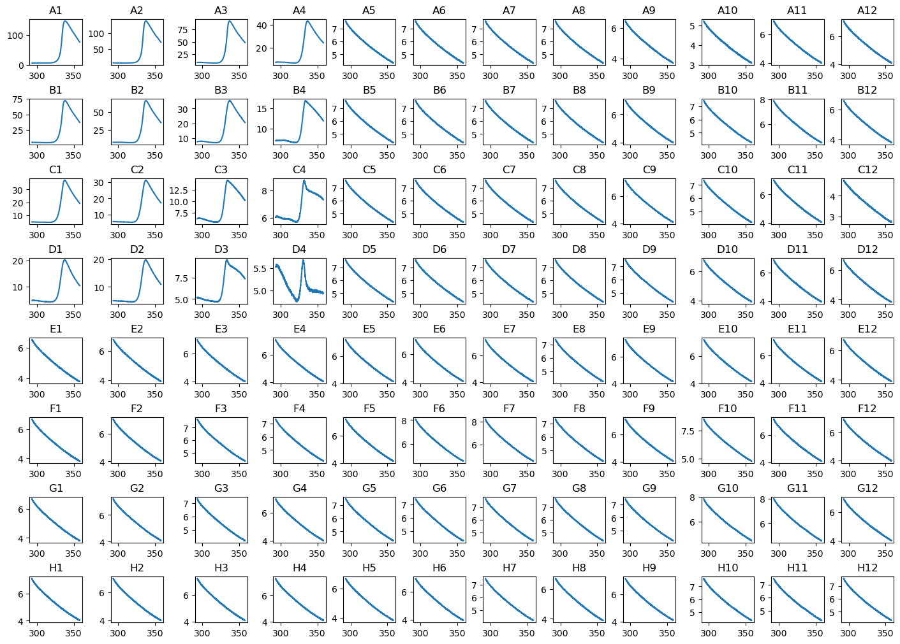
#Fit the data
dfObj = pd.DataFrame(columns=['SamplePos', 'Tm', 'Error'])
fig = plt.figure(figsize=(14,10), constrained_layout=True)
gs1 = fig.add_gridspec(4, 4)
axs = []
for i, num in zip(['A1','A2','A3','A4','B1','B2','B3','B4','C1','C2','C3','C4','D1','D2','D3','D4'], range(1,17)):
x=dict_of_wells[i]['Temp'] + 273.15 # convert from °C to °K
y=dict_of_wells[i]['465-580']
params, params_covariance = curve_fit(funcUFnoDCp, x, y,[6, -0.01, 150, 0.02, 402000, 330], maxfev=10000) # initial guess for curve_fit - this might not be a good estimate for each condition!
dfAdd = pd.DataFrame({'SamplePos': [i], 'Tm': [params[5]], 'Error': [np.sqrt(np.diag(params_covariance))[5]]})
dfObj = pd.concat((dfObj, dfAdd), axis = 0)
axs.append(fig.add_subplot(gs1[num - 1]))
axs[-1].plot(dict_of_wells[i]['Temp'] + 273.15, dict_of_wells[i]['465-580'])
axs[-1].plot(x, funcUFnoDCp(x, *params), color="red",label='Fit')
axs[-1].set_title(i)
plt.show()
print(dfObj)
C:\Users\ucbtrv2\AppData\Local\Temp\ipykernel_14616\2771878854.py:17: FutureWarning: The behavior of DataFrame concatenation with empty or all-NA entries is deprecated. In a future version, this will no longer exclude empty or all-NA columns when determining the result dtypes. To retain the old behavior, exclude the relevant entries before the concat operation.
dfObj = pd.concat((dfObj, dfAdd), axis = 0)
SamplePos Tm Error
0 A1 333.812832 0.012452
0 A2 333.365094 0.014226
0 A3 332.896370 0.021205
0 A4 331.564137 0.018647
0 B1 333.540712 0.021271
0 B2 333.053548 0.022692
0 B3 331.686003 0.015675
0 B4 329.483934 0.013724
0 C1 332.858759 0.024700
0 C2 332.166180 0.018651
0 C3 329.744508 0.014210
0 C4 327.951536 0.032072
0 D1 332.359852 0.021023
0 D2 331.910076 0.017261
0 D3 328.908492 0.023433
0 D4 326.209046 0.099373
Simulating data#
#Import libraries
import numpy as np
import matplotlib.pyplot as plt
import pandas as pd
from scipy.integrate import odeint
from scipy.optimize import curve_fit
\(A\) \(\rightarrow\) \(B\)#
#Define the model
def funcAtoB(C, t, kf): #create the function
"""
Define a function for A -> B
Args:
C, the concentrations of A and B (float) in mol/L
t, the time (float) in s
kf, the forward rate constant (float) in 1/s
Returns:
dC/dt, derivative values (float) in (mol/L)/s
"""
CA = C[0] #the initial concentration of A is the first element from the list C
CB = C[1] #the initial concentration of B is the second element from the list C
dAdt = -kf * CA #rate equation for [A]
dBdt = +kf * CA #rate equation for [B]
return [dAdt, dBdt]
#Provide initial concetrations and time points
CAtoB = [100, 0] #y0 - initial conditions
tAtoB = np.linspace(0, 2, 1000) #t - time points, an array with 1000 evenly distributed elements between 0 (included) and 2 (included)
kfAtoB = (7,) #args - rate constant. Of note, a tuple with one item is constructed by following a value with a comma!
#Solve the ODE for each time point - odeint(model, y0, t, args=)
yAtoB = odeint(funcAtoB, CAtoB, tAtoB, kfAtoB) #solve ODE - odeint(model, y0, t, args=)
print(yAtoB) #print the outcome
[[1.00000000e+02 0.00000000e+00]
[9.86083725e+01 1.39162750e+00]
[9.72361113e+01 2.76388871e+00]
...
[8.55163449e-05 9.99999145e+01]
[8.43263420e-05 9.99999157e+01]
[8.31528952e-05 9.99999168e+01]]
#Plot the data
plt.figure(figsize=(7,5)) #to create a figure object
plt.plot(tAtoB,yAtoB[:,0],'g') #select the first column of yAtoB, i.e. [A], and plot versus t, use green
plt.plot(tAtoB,yAtoB[:,1],'b') #select the second column of yAtoB, i.e. [B], and plot versus t, use blue
plt.xlabel('Time (s)', fontsize=18) #label the X-axis
plt.ylabel('[A] (mM)', fontsize=18) #label the Y-axis
plt.xlim([0,1]) #set X-axis range
plt.ylim([0,110]) #set Y-axis range
plt.legend(['A','B'], loc='best') #include a legend
plt.show() #show the figure object
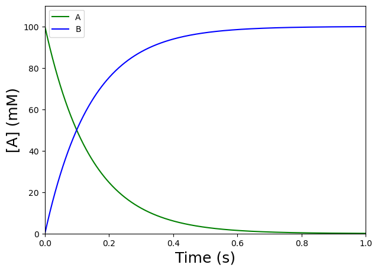
\(A + B\) \(\rightleftharpoons\) \(AB\)#
#Define the model
def funcAandBtofromAB(C, t, kf, kr): #create the function
"""
Define a function for A + B -> AB
Args:
C, the concentrations of A, B, and AB (float) in mol/L
t, the time (float) in s
kf, the forward rate constant (float) in (mol/L)/s
kr, the reverse rate constant (float) in 1/s
Returns:
dC/dt, derivative values (float) in (mol/L)/s
"""
CA = C[0] #the initial concentration of A is the first element from the list C
CB = C[1] #the initial concentration of B is the second element from the list C
CAB = C[2] #the initial concentration of AB is the thirs element from the list C
dAdt = -kf * CA * CB + kr * CAB #rate equation for [A]
dBdt = -kf * CA * CB + kr * CAB #rate equation for [B]
dABdt = kf * CA * CB - kr * CAB #rate equation for [AB]
return [dAdt, dBdt, dABdt]
#Provide initial concetrations and time points
CAandBtofromAB = [10, 50, 0] #y0 - initial conditions
tAandBtofromAB = np.linspace(0, 0.1, 1000) #t - time points, an array with 1000 evenly distributed elements between 0 (included) and 0.1 (included)
ksAandBtofromAB = (1, 10) #args - rate constants
#Solve the ODE for each time point - odeint(model, y0, t, args=)
yAandBtofromAB = odeint(funcAandBtofromAB, CAandBtofromAB, tAandBtofromAB, ksAandBtofromAB) #solve ODE - odeint(model, y0, t, args=)
print(yAandBtofromAB) #print the outcome
[[1.00000000e+01 5.00000000e+01 0.00000000e+00]
[9.95012480e+00 4.99501248e+01 4.98752049e-02]
[9.90059739e+00 4.99005974e+01 9.94026072e-02]
...
[1.95837942e+00 4.19583794e+01 8.04162058e+00]
[1.95820429e+00 4.19582043e+01 8.04179571e+00]
[1.95803011e+00 4.19580301e+01 8.04196989e+00]]
#Plot the data
plt.figure(figsize=(7,5)) #to create a figure object
plt.plot(tAandBtofromAB,yAandBtofromAB[:,0],'g') #select the first column of yAandBtofromAB, i.e. [A], and plot versus t, use green
plt.plot(tAandBtofromAB,yAandBtofromAB[:,1],'b') #select the second column of yAandBtofromAB, i.e. [B], and plot versus t, use blue
plt.plot(tAandBtofromAB,yAandBtofromAB[:,2],'r') #select the third column of yAandBtofromAB, i.e. [AB], and plot versus t, use red
plt.xlabel('Time (s)', fontsize=18) #label the X-axis
plt.ylabel('[x] ($\mu$M)', fontsize=18) #label the Y-axis
plt.xlim([0,0.1]) #set X-axis range
plt.ylim([0,55]) #set Y-axis range
plt.legend(['A','B', 'AB'], loc='best') #include a legend
plt.show() #show the figure object
<>:7: SyntaxWarning: invalid escape sequence '\m'
<>:7: SyntaxWarning: invalid escape sequence '\m'
C:\Users\ucbtrv2\AppData\Local\Temp\ipykernel_14616\281931762.py:7: SyntaxWarning: invalid escape sequence '\m'
plt.ylabel('[x] ($\mu$M)', fontsize=18) #label the Y-axis
\(E + S\) \(\rightleftharpoons\) \(ES\) \(\rightarrow\) \(E + P\)#
#Define the model - function that returns dE/dt, dS/dt, dES/dt, and dP/dt
def funcEandStofromEStoP(C, t, k1, k2, k3) :
# constants
CE = C[0]
CS = C[1]
CES = C[2]
CP = C[3]
# equations
dEdt = -k1 * CE * CS + (k2 + k3) * CES
dSdt = -k1 * CE * CS + k2 * CES
dESdt = k1 * CE * CS - (k2 + k3) * CES
dPdt = k3 * CES
return [dEdt, dSdt, dESdt, dPdt]
#Provide initial concetrations and time points
#y0 - initial conditions
CEandStofromEStoP = [1, 10, 0, 0]
#t - time points
tEandStofromEStoP = np.linspace(0, 60, 10000)
#args - rate constants
ksEandStofromEStoP = (1, 0.1, 0.5)
#Solve the ODE for each time point - odeint(model, y0, t, args=)
yEandStofromEStoP = odeint(funcEandStofromEStoP, CEandStofromEStoP, tEandStofromEStoP, ksEandStofromEStoP)
print(yEandStofromEStoP)
[[1.00000000e+00 1.00000000e+01 0.00000000e+00 0.00000000e+00]
[9.42028253e-01 9.94194028e+00 5.79717469e-02 8.79707258e-05]
[8.87918178e-01 9.88757417e+00 1.12081822e-01 3.44004555e-04]
...
[9.99999875e-01 2.17751575e-08 1.24982377e-07 9.99999985e+00]
[9.99999875e-01 2.17194857e-08 1.24662060e-07 9.99999985e+00]
[9.99999876e-01 2.16640125e-08 1.24342882e-07 9.99999985e+00]]
#Plot the data
#create plot
plt.figure(figsize=(7,5))
plt.plot(tEandStofromEStoP,yEandStofromEStoP[:,0],'g:') #select the first column of yEandStofromEStoP, i.e. [E], and plot versus t, use green
plt.plot(tEandStofromEStoP,yEandStofromEStoP[:,1],'b-') #select the second column of yEandStofromEStoP, i.e. [S], and plot versus t, use blue
plt.plot(tEandStofromEStoP,yEandStofromEStoP[:,2],'r--') #select the third column of yEandStofromEStoP, i.e. [ES], and plot versus t, use red
plt.plot(tEandStofromEStoP,yEandStofromEStoP[:,3],'y-.') #select the fourth column of yEandStofromEStoP, i.e. [P], and plot versus t, use yellow
plt.xlabel('Time (s)', fontsize=18) #label the X-axis
plt.ylabel('[x] ($\mu$M)', fontsize=18) #label the Y-axis
plt.xlim([0,60]) #set X-axis range
plt.ylim([0,11]) #set Y-axis range
plt.legend(['E','S', 'ES', 'P'], loc='best') #include a legend
plt.show()
<>:9: SyntaxWarning: invalid escape sequence '\m'
<>:9: SyntaxWarning: invalid escape sequence '\m'
C:\Users\ucbtrv2\AppData\Local\Temp\ipykernel_14616\2696257987.py:9: SyntaxWarning: invalid escape sequence '\m'
plt.ylabel('[x] ($\mu$M)', fontsize=18) #label the Y-axis
The pre-steady state (or transient) phase#
#create plot for [E] and [S] from 0 to 0.5 s
plt.figure(figsize=(7,5))
plt.plot(tEandStofromEStoP,yEandStofromEStoP[:,0],'g:') #select the first column of yEandStofromEStoP, i.e. [E], and plot versus t, use green
plt.plot(tEandStofromEStoP,yEandStofromEStoP[:,2],'r--') #select the third column of yEandStofromEStoP, i.e. [ES], and plot versus t, use red
plt.xlabel('Time (s)', fontsize=18) #label the X-axis
plt.ylabel('[x] ($\mu$M)', fontsize=18) #label the Y-axis
plt.xlim([0,0.5]) #set X-axis range
plt.ylim([0,1.1]) #set Y-axis range
plt.legend(['E','ES'], loc='best') #include a legend
plt.show()
<>:6: SyntaxWarning: invalid escape sequence '\m'
<>:6: SyntaxWarning: invalid escape sequence '\m'
C:\Users\ucbtrv2\AppData\Local\Temp\ipykernel_14616\606441847.py:6: SyntaxWarning: invalid escape sequence '\m'
plt.ylabel('[x] ($\mu$M)', fontsize=18) #label the Y-axis
The steady state phase#
#create plot for [E] and [S] from 0.5 to 10 s
plt.figure(figsize=(7,5))
plt.plot(tEandStofromEStoP,yEandStofromEStoP[:,0],'g:') #select the first column of yEandStofromEStoP, i.e. [E], and plot versus t, use green
plt.plot(tEandStofromEStoP,yEandStofromEStoP[:,2],'r--') #select the third column of yEandStofromEStoP, i.e. [ES], and plot versus t, use red
plt.xlabel('Time (s)', fontsize=18) #label the X-axis
plt.ylabel('[x] ($\mu$M)', fontsize=18) #label the Y-axis
plt.xlim([0.5,10]) #set X-axis range
plt.ylim([0,1.1]) #set Y-axis range
plt.legend(['E', 'ES'], loc='best') #include a legend
plt.show()
<>:6: SyntaxWarning: invalid escape sequence '\m'
<>:6: SyntaxWarning: invalid escape sequence '\m'
C:\Users\ucbtrv2\AppData\Local\Temp\ipykernel_14616\907882851.py:6: SyntaxWarning: invalid escape sequence '\m'
plt.ylabel('[x] ($\mu$M)', fontsize=18) #label the Y-axis
After ~10 s#
#create plot for [E] and [S] from 0 to 60 s
plt.figure(figsize=(7,5))
plt.plot(tEandStofromEStoP,yEandStofromEStoP[:,0],'g:') #select the first column of yEandStofromEStoP, i.e. [E], and plot versus t, use green
plt.plot(tEandStofromEStoP,yEandStofromEStoP[:,2],'r--') #select the third column of yEandStofromEStoP, i.e. [ES], and plot versus t, use red
plt.xlabel('Time (s)', fontsize=18) #label the X-axis
plt.ylabel('[x] ($\mu$M)', fontsize=18) #label the Y-axis
plt.xlim([0,60]) #set X-axis range
plt.ylim([0,1.1]) #set Y-axis range
plt.legend(['E','ES'], loc='best') #include a legend
plt.show()
<>:6: SyntaxWarning: invalid escape sequence '\m'
<>:6: SyntaxWarning: invalid escape sequence '\m'
C:\Users\ucbtrv2\AppData\Local\Temp\ipykernel_14616\516644659.py:6: SyntaxWarning: invalid escape sequence '\m'
plt.ylabel('[x] ($\mu$M)', fontsize=18) #label the Y-axis
Compare \([S]_{0,1} = 10\) \(\mu\)\(M\) and \([S]_{0,2} = 1\) \(\mu\)\(M\) for \(k_{+1,1} = k_{+1,2} = 1\) \(\mu\)\(M^{-1} s^{-1}\); \(k_{-1,1} = k_{-1,2} = 0.1\) \(s^{-1}\); \(k_{2,1} = k_{2,2} = 0.5\) \(s^{-1}\), \([ES]_{0,1} = [ES]_{0,2} = 0\) \(\mu\)\(M\), \([P]_{0,1} = [P]_{0,2} = 0\) \(\mu\)\(M\), and \([E]_{0,1} = [E]_{0,2} = 1\) \(\mu\)\(M\). We can see that the initial reaction rate decreases and that \([ES]\) decreases rapidly for \([S]_{0,2}\). There is only enough substrate for a single turnover. Where does each curve reach a plateau?#
CEandStofromEStoP_1 = [1, 10, 0, 0]
CEandStofromEStoP_2 = [1, 1, 0, 0]
yEandStofromEStoP_1 = odeint(funcEandStofromEStoP, CEandStofromEStoP_1, tEandStofromEStoP, ksEandStofromEStoP)
yEandStofromEStoP_2 = odeint(funcEandStofromEStoP, CEandStofromEStoP_2, tEandStofromEStoP, ksEandStofromEStoP)
plt.figure(figsize=(7,5))
plt.plot(tEandStofromEStoP,yEandStofromEStoP_1[:,2],'g:') #select the third column of yEandStofromEStoP, i.e. [ES], and plot versus t, use red
plt.plot(tEandStofromEStoP,yEandStofromEStoP_2[:,2],'r--') #select the third column of yEandStofromEStoP, i.e. [ES], and plot versus t, use red
plt.xlabel('Time (s)', fontsize=18) #label the X-axis
plt.ylabel('[ES] ($\mu$M)', fontsize=18) #label the Y-axis
plt.xlim([0,30]) #set X-axis range
plt.ylim([0,1.1]) #set Y-axis range
plt.legend(['[S] = 10 $\mu$M','[S] = 1 $\mu$M'], loc='best') #include a legend
plt.show()
plt.figure(figsize=(7,5))
plt.plot(tEandStofromEStoP,yEandStofromEStoP_1[:,3],'g:') #select the fourth column of yAandBtofromAB, i.e. [P], and plot versus t, use green
plt.plot(tEandStofromEStoP,yEandStofromEStoP_2[:,3],'r--') #select the fourth column of yAandBtofromAB, i.e. [P], and plot versus t, use red
plt.xlabel('Time (s)', fontsize=18) #label the X-axis
plt.ylabel('[P] ($\mu$M)', fontsize=18) #label the Y-axis
plt.xlim([0,30]) #set X-axis range
plt.ylim([0,11]) #set Y-axis range
plt.legend(['[S] = 10 $\mu$M','[S] = 1 $\mu$M'], loc='best') #include a legend
plt.show()
<>:11: SyntaxWarning: invalid escape sequence '\m'
<>:14: SyntaxWarning: invalid escape sequence '\m'
<>:14: SyntaxWarning: invalid escape sequence '\m'
<>:21: SyntaxWarning: invalid escape sequence '\m'
<>:24: SyntaxWarning: invalid escape sequence '\m'
<>:24: SyntaxWarning: invalid escape sequence '\m'
<>:11: SyntaxWarning: invalid escape sequence '\m'
<>:14: SyntaxWarning: invalid escape sequence '\m'
<>:14: SyntaxWarning: invalid escape sequence '\m'
<>:21: SyntaxWarning: invalid escape sequence '\m'
<>:24: SyntaxWarning: invalid escape sequence '\m'
<>:24: SyntaxWarning: invalid escape sequence '\m'
C:\Users\ucbtrv2\AppData\Local\Temp\ipykernel_14616\2971370150.py:11: SyntaxWarning: invalid escape sequence '\m'
plt.ylabel('[ES] ($\mu$M)', fontsize=18) #label the Y-axis
C:\Users\ucbtrv2\AppData\Local\Temp\ipykernel_14616\2971370150.py:14: SyntaxWarning: invalid escape sequence '\m'
plt.legend(['[S] = 10 $\mu$M','[S] = 1 $\mu$M'], loc='best') #include a legend
C:\Users\ucbtrv2\AppData\Local\Temp\ipykernel_14616\2971370150.py:14: SyntaxWarning: invalid escape sequence '\m'
plt.legend(['[S] = 10 $\mu$M','[S] = 1 $\mu$M'], loc='best') #include a legend
C:\Users\ucbtrv2\AppData\Local\Temp\ipykernel_14616\2971370150.py:21: SyntaxWarning: invalid escape sequence '\m'
plt.ylabel('[P] ($\mu$M)', fontsize=18) #label the Y-axis
C:\Users\ucbtrv2\AppData\Local\Temp\ipykernel_14616\2971370150.py:24: SyntaxWarning: invalid escape sequence '\m'
plt.legend(['[S] = 10 $\mu$M','[S] = 1 $\mu$M'], loc='best') #include a legend
C:\Users\ucbtrv2\AppData\Local\Temp\ipykernel_14616\2971370150.py:24: SyntaxWarning: invalid escape sequence '\m'
plt.legend(['[S] = 10 $\mu$M','[S] = 1 $\mu$M'], loc='best') #include a legend
Compare \([E]_{0,1} = 1\) \(\mu\)\(M\) and \([E]_{0,2} = 0.1\) \(\mu\)\(M\) for \(k_{+1,1} = k_{+1,2} = 1\) \(\mu\)\(M^{-1} s^{-1}\); \(k_{-1,1} = k_{-1,2} = 0.1\) \(s^{-1}\); \(k_{2,1} = k_{2,2} = 0.5\) \(s^{-1}\), \([ES]_{0,1} = [ES]_{0,2} = 0\) \(\mu\)\(M\), \([P]_{0,1} = [P]_{0,2} = 0\) \(\mu\)\(M\), and \([S]_{0,1} = [S]_{0,2} = 10\) \(\mu\)\(M\). We can see that the duration of the steady-state phase increases for \([E]_{0,2}\). The enzyme undergoes multiple rounds of catalysis without depleting the substrate. When we study steady-state kinetics, conditions are chosen so that \([S]_0 \gg [E]_0\).#
CEandStofromEStoP_3 = [1, 10, 0, 0]
CEandStofromEStoP_4 = [0.1, 10, 0, 0]
yEandStofromEStoP_3 = odeint(funcEandStofromEStoP, CEandStofromEStoP_3, tEandStofromEStoP, ksEandStofromEStoP)
yEandStofromEStoP_4 = odeint(funcEandStofromEStoP, CEandStofromEStoP_4, tEandStofromEStoP, ksEandStofromEStoP)
plt.figure(figsize=(7,5))
plt.plot(tEandStofromEStoP,yEandStofromEStoP_3[:,2],'g:') #select the third column of yEandStofromEStoP, i.e. [ES], and plot versus t, use red
plt.plot(tEandStofromEStoP,yEandStofromEStoP_4[:,2],'r--') #select the third column of yEandStofromEStoP, i.e. [ES], and plot versus t, use red
plt.xlabel('Time (s)', fontsize=18) #label the X-axis
plt.ylabel('[ES] ($\mu$M)', fontsize=18) #label the Y-axis
plt.xlim([0,30]) #set X-axis range
plt.ylim([0,1.1]) #set Y-axis range
plt.legend(['[S] = 1 $\mu$M','[S] = 0.1 $\mu$M'], loc='best') #include a legend
plt.show()
plt.figure(figsize=(7,5))
plt.plot(tEandStofromEStoP,yEandStofromEStoP_3[:,3],'g:') #select the fourth column of yAandBtofromAB, i.e. [P], and plot versus t, use green
plt.plot(tEandStofromEStoP,yEandStofromEStoP_4[:,3],'r--') #select the fourth column of yAandBtofromAB, i.e. [P], and plot versus t, use red
plt.xlabel('Time (s)', fontsize=18) #label the X-axis
plt.ylabel('[P] ($\mu$M)', fontsize=18) #label the Y-axis
plt.xlim([0,30]) #set X-axis range
plt.ylim([0,11]) #set Y-axis range
plt.legend(['[S] = 1 $\mu$M','[S] = 0.1 $\mu$M'], loc='best') #include a legend
plt.show()
<>:11: SyntaxWarning: invalid escape sequence '\m'
<>:14: SyntaxWarning: invalid escape sequence '\m'
<>:14: SyntaxWarning: invalid escape sequence '\m'
<>:21: SyntaxWarning: invalid escape sequence '\m'
<>:24: SyntaxWarning: invalid escape sequence '\m'
<>:24: SyntaxWarning: invalid escape sequence '\m'
<>:11: SyntaxWarning: invalid escape sequence '\m'
<>:14: SyntaxWarning: invalid escape sequence '\m'
<>:14: SyntaxWarning: invalid escape sequence '\m'
<>:21: SyntaxWarning: invalid escape sequence '\m'
<>:24: SyntaxWarning: invalid escape sequence '\m'
<>:24: SyntaxWarning: invalid escape sequence '\m'
C:\Users\ucbtrv2\AppData\Local\Temp\ipykernel_14616\1917555078.py:11: SyntaxWarning: invalid escape sequence '\m'
plt.ylabel('[ES] ($\mu$M)', fontsize=18) #label the Y-axis
C:\Users\ucbtrv2\AppData\Local\Temp\ipykernel_14616\1917555078.py:14: SyntaxWarning: invalid escape sequence '\m'
plt.legend(['[S] = 1 $\mu$M','[S] = 0.1 $\mu$M'], loc='best') #include a legend
C:\Users\ucbtrv2\AppData\Local\Temp\ipykernel_14616\1917555078.py:14: SyntaxWarning: invalid escape sequence '\m'
plt.legend(['[S] = 1 $\mu$M','[S] = 0.1 $\mu$M'], loc='best') #include a legend
C:\Users\ucbtrv2\AppData\Local\Temp\ipykernel_14616\1917555078.py:21: SyntaxWarning: invalid escape sequence '\m'
plt.ylabel('[P] ($\mu$M)', fontsize=18) #label the Y-axis
C:\Users\ucbtrv2\AppData\Local\Temp\ipykernel_14616\1917555078.py:24: SyntaxWarning: invalid escape sequence '\m'
plt.legend(['[S] = 1 $\mu$M','[S] = 0.1 $\mu$M'], loc='best') #include a legend
C:\Users\ucbtrv2\AppData\Local\Temp\ipykernel_14616\1917555078.py:24: SyntaxWarning: invalid escape sequence '\m'
plt.legend(['[S] = 1 $\mu$M','[S] = 0.1 $\mu$M'], loc='best') #include a legend